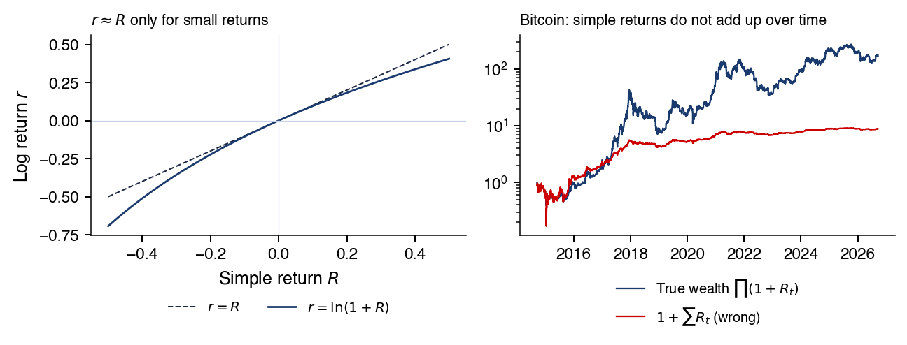

Bucharest University of Economic Studies IDA Institute Digital Assets Blockchain Research Center AI4EFin Artificial Intelligence for Energy Finance Romanian Academy, Institute for Economic Forecasting MSCA Digital Finance
Opening: Which Regularities Do Returns Share Across Markets?
A stylised fact is a qualitative statistical regularity of returns, observed across many assets, markets and periods (Cont, 2001). Stylised facts are the properties that any model of returns must reproduce, and the model with independent and identically distributed (i.i.d.) returns from the Normal distribution reproduces few of them. The chapter tests them again on five markets with different quoting rules and calendars, the S&P 500, BET-TR, Bitcoin, EUR/RON and gold, with daily closing prices up to 18 September 2026.
The regularity described by Mandelbrot (1963) is volatility clustering: the direction of returns does not repeat, but their size does. For daily S&P 500 log returns over 1990–2026, the lag-1 autocorrelation is −0.08; of 100 lags, 20 leave the i.i.d. band but only 7 leave the robust band. The autocorrelations of absolute returns are positive at all 100 lags: 0.27 at lag 1, 0.22 at lag 20 and still 0.09 at lag 100. Returns are therefore nearly uncorrelated but not independent, because independence requires zero correlation between any functions of the returns.
The distribution has heavy tails, and aggregation brings it only slowly towards the Normal distribution. The excess kurtosis of the S&P 500 falls from 10.9 for daily returns to 1.6 for 60-day returns, and the Normal distribution is still rejected at that horizon (\(z = 4.1\)). The long-memory parameter of \(|r_t|\),\(\hat d\), lies between 0.35 and 0.50 in all five markets, at least 8 standard errors from zero. A slow decay of the empirical autocorrelation does not, by itself, prove long memory: structural breaks in the level of volatility produce the same pattern.
Autocorrelations of daily S&P 500 returns, 1990–2026, at lags 1–100: left the returns \(r_t\), middle the absolute returns \(|r_t|\), right the squares \(r_t^2\); the blue zone is the 95% band under the i.i.d. hypothesis and the lines are the robust band. Interactive chart: “Facts 1 and 6: Uncorrelated but Not Independent” →
What you will be able to do
Compute and aggregate simple and log returns.
Compute moments, quantiles and the Hill estimator.
Interpret zero correlation: it does not mean independence.
Interpret tests with valid reference distributions.
Compute volatility from the open, high, low and close.
Interpret a hypothesis put forward by an AI assistant.
Prices and ReturnsSimple and log returns, annualisation, CAGR and volatility drag.
Distribution and TailsHeavy tails, classical tests, the Hill estimator and gain/loss asymmetry.
Dependence and Its MechanismsUncorrelated but dependent returns, intermittency, aggregational Gaussianity, the leverage effect and the volume–volatility link.
The chapter studies the statistical properties that returns share across very different markets. These properties are not derived from a model; they are measured, and each one is a hypothesis that can be tested again on new data. The section defines the notion of a stylised fact, groups the facts into four families and describes the five markets on which they are tested.
A stylised fact is a qualitative statistical regularity of returns, observed across many assets, markets and periods (Cont, 2001). The word "qualitative" matters: a stylised fact says that the tails are heavier than those of the Normal distribution, or that the autocorrelation of absolute returns is positive over many lags, but it does not fix a parameter value that holds for every market. Because the regularities are empirical, each one remains a hypothesis that has to be tested again on each market and at each frequency (Ratliff-Crain, Van Oort, Koehler & Tivnan, 2025).
The central message of the chapter concerns two different objects. The returns themselves show little linear autocorrelation, so their direction is hard to forecast from their own past. Their size, measured by absolute or squared returns, is strongly persistent and therefore largely predictable. A model that treats returns as independent and identically distributed (i.i.d.) draws from the Normal distribution cannot reproduce this combination, nor most of the other facts.
Stylised facts thus play the role of a benchmark: a model of returns is credible only if data simulated from it display the same regularities as the observed data. The proofs of the results used in the chapter are collected in the Appendix.
In brief
What you should be able to do
compute and aggregate simple and log returns
compute moments, quantiles and the Hill estimator
interpret zero correlation: not independence
interpret tests with valid reference distributions
compute volatility from the open, high, low and close
interpret a hypothesis of an artificial intelligence (AI) assistant
Further Topics and Appendix: reading for familiarity
Definition
A stylised fact is a qualitative statistical regularity of returns
seen across assets, markets and periods Cont (2001)
The list of Cont (2001) contains eleven facts, which the table arranges in four groups. The first group describes the unconditional distribution: heavy tails (fact 2), the asymmetry between gains and losses (fact 3), the slow approach to the Normal distribution as returns are aggregated over longer horizons (fact 4) and the heavy tails that remain after correcting for volatility (fact 7). The second group has a single fact, the absence of linear autocorrelation in returns (fact 1).
The third group concerns the dependence of volatility: intermittency, that is bursts of high volatility separated by calm periods (fact 5), volatility clustering (fact 6), the slow decay of the autocorrelation of absolute returns (fact 8) and the asymmetry between coarse and fine time scales (fact 11). The fourth group links returns to other variables: the leverage effect, in which volatility rises more after falls than after rises (fact 9), and the correlation between trading volume and volatility (fact 10).
The chapter tests the facts again on five markets, with data up to September 2026, and adds to each one the inference it needs: the statistic, the null hypothesis and a reference distribution that remains valid when returns are dependent and heavy-tailed. The early evidence is due to Mandelbrot (1963) and Fama (1965); a textbook treatment is in Franke, Härdle & Hafner (2019). Detailed examples and advanced topics are collected in Further Topics, after the Conclusions.
In brief
Group
Facts
Distribution
2. heavy tails; 3. gain/loss asymmetry; 4. aggregational Gaussianity; 7. conditional heavy tails
Dependence of returns
1. absence of linear autocorrelation
Dependence of volatility
5. intermittency; 6. volatility clustering; 8. slow decay of the autocorrelation of \(|r_t|\); 11. asymmetry in time scales
The five series differ in what is quoted, in which currency and on which calendar. The S&P 500 is a US price index in dollars, observed on US trading days from 1990, with 9,245 daily returns; for it the open, high and low are also available. BET-TR is the BET index of the Bucharest Stock Exchange (BVB) with dividends reinvested (total return), in lei, observed on BVB trading days from September 2014, with 2,992 returns. Bitcoin is a price in dollars, traded every day of the week, also from September 2014, with 4,384 returns.
EUR/RON is the reference rate of the National Bank of Romania (BNR), in lei per euro, from July 2005, on Romanian working days, with 5,352 returns. The leu is under a managed float: the exchange rate is set by the market, but the central bank intervenes. The reference rate is used instead of interbank quotes because in several years those quotes had a lag-1 autocorrelation between −0.4 and −0.7, which came from quote errors rather than from the behaviour of the exchange rate. Gold is the spot price in dollars per ounce, quoted on weekdays only, from 1990, with 9,559 returns.
All series use daily closes up to 18 September 2026, and log returns are computed on each series' own calendar; \(T\) denotes the number of returns. Because the calendars differ, a "day" means one trading day for the S&P 500 and BET-TR, one calendar day for Bitcoin and one weekday for gold. This affects annualisation, treated in the next section.
In brief
Series
Price used
Type, currency
Calendar
Sample
\(T\)
S&P 500
daily close (plus open, high, low)
price index, USD
US trading days
1990–2026
9 245
BET-TR
daily close
total return, RON
trading days of the Bucharest Stock Exchange (BVB)
Sep 2014 – 2026
2 992
Bitcoin
daily close
price, USD
every day, 24/7
Sep 2014 – 2026
4 384
EUR/RON
reference rate of the National Bank of Romania (BNR)
RON per EUR, managed float
Romanian working days
Jul 2005 – 2026
5 352
Gold
daily close
spot, USD per ounce
weekdays only
1990–2026
9 559
Daily closes up to 18 September 2026
log returns on each series' own calendar
\(T\): the number of returns
BET-TR: the BVB's BET index with dividends reinvested (total return)
Managed float: a market-determined exchange rate with central-bank interventions
we use the BNR reference rate: in several years the EUR/RON interbank quotes had a lag-1 autocorrelation of \(-0.4\) to \(-0.7\), which came from quote errors
Section summary
The facts are qualitative regularities, grouped by distribution, dependence of returns, dependence of volatility and links to other variables. The five markets cover an equity index, an emerging-market total-return index, a cryptoasset, a managed exchange rate and a commodity, so a fact that holds across all of them is unlikely to be an artefact of a single market's microstructure.
Prices and Returns
Every statistic in the chapter is computed from returns, not from prices. This section defines the two kinds of return, the simple and the log return, states which one adds up over time and which one adds up across assets, and shows how daily figures are converted to annual ones. The last part separates the arithmetic mean from the compound growth rate: their difference, volatility drag, grows with the square of volatility and is large for Bitcoin.
Simple or Log Return: What Adds Up over Time and What Adds Up across Assets
where the second equality in (1.1) holds when no dividend is paid. With dividends, a total-return or adjusted price series, such as BET-TR, includes them in the price.
The two returns aggregate in different directions. Over \(k\) periods, indexed by \(j = 0, \dots, k-1\), the simple return is the product \(\prod_{j}(1 + R_{t-j}) - 1\), while the log return is the sum \(\sum_j r_{t-j}\): log returns are additive over time. Across assets the situation is reversed. If \(R_{i,t}\) is the simple return of asset \(i\) and \(w_i\) its weight in portfolio value, with \(\sum_i w_i = 1\), the portfolio return is exactly \(R_{p,t} = \sum_i w_i R_{i,t}\); for log returns this relation holds only approximately.
The ranges also differ: a simple return cannot fall below −100%, whereas a log return takes any real value. Simple returns are therefore used for portfolios and performance reporting, and log returns for the dynamics of a single asset and for arguments based on the central limit theorem (CLT), which concerns sums.
Let \(A\) be the number of return intervals per year: 252 for stocks and EUR/RON (trading days), 365 for Bitcoin, which trades every day, and about 260 for gold, the actual number of weekday quotes. The annual mean of log returns is \(\mu_{\text{ann}} = A\,\bar r\), with \(\bar r = T^{-1}\sum_{t} r_t\). It is the log growth rate and requires only a constant mean. The Sharpe ratio uses instead the annual mean of simple returns, \(A\bar R\), which is larger.
The annualised volatility is
\[\sigma_{\text{ann}} = \sqrt{A}\,\hat\sigma,\]
(1.2)
where \(\hat\sigma\) is the daily sample standard deviation. Rule (1.2) is exact only when returns are serially uncorrelated and have constant variance: then daily variances add up and the annual variance is \(A\hat\sigma^2\). With autocorrelation the factor \(\sqrt{A}\) is no longer exact. If the EUR/RON lag-1 autocorrelation, \(\hat\rho_1 = 0.17\), were the parameter of an AR(1) process, the annualised volatility would be about 5.3% instead of 4.4%.
The correct scaling depends on the whole autocovariance structure, not on lag 1 alone. For EUR/RON, negative autocorrelations at other lags offset the positive lag-1 value, so the AR(1) correction overstates the effect; the derivation is in the Appendix and the empirical calculation in Chapter 0 and Seminar 1.
In brief
\(A\): the number of return intervals per year
252 for stocks and EUR/RON (trading days), 365 for crypto (traded every day), \(\approx 260\) for gold (the actual weekday quotes)
\(\mu_{\text{ann}} = A\,\bar r\), with \(\bar r = \frac1T\sum_{t=1}^{T} r_t\): the annual mean of log returns
the log growth rate
needs only a constant mean
the Sharpe ratio uses the annual mean of simple returns, \(A\bar R\), which is larger
\(\sigma_{\text{ann}} = \sqrt{A}\,\hat\sigma\), with \(\hat\sigma\) the daily sample standard deviation
exact only for serially uncorrelated returns with constant variance
then daily variances add up, and the annual variance is \(A\,\hat\sigma^2\)
with autocorrelation the \(\sqrt{A}\) factor is no longer exact: if the EUR/RON \(\hat\rho_1 = 0.17\) were the parameter of an AR(1), the annualised volatility would be about \(5.3\%\) instead of \(4.4\%\) (Appendix)
the empirical scaling needs the whole autocovariance structure: for EUR/RON, negative autocorrelations at other lags offset lag 1 (Chapter 0; Seminar 1, A7)
CAGR and Volatility Drag: Why the Arithmetic Mean Overstates Growth
The compound annual growth rate (CAGR) is the constant annual return that takes the price from \(P_0\) at the start of the sample to \(P_T\) at its end, over \(Y\) years:
\[\text{CAGR} = (P_T/P_0)^{1/Y} - 1.\]
(1.3)
It is the annual geometric mean of the growth factors, and it is the quantity an investor who held the asset throughout actually experienced.
On the log scale, the compound growth rate equals the arithmetic mean minus half the variance:
where \(\mu_{\text{arith}}\) is the annual arithmetic mean of simple returns and \(\sigma^2\) their annual variance. The left-hand side is the continuously compounded growth rate, the annual mean log return \(A\bar r\). The gap between the arithmetic and the geometric mean is called volatility drag; on the log scale it is approximately \(\sigma^2/2\), so it grows with the square of volatility. Two assets with the same arithmetic mean can therefore have very different long-run growth.
In brief
CAGR (Compound Annual Growth Rate): the constant annual return that takes the price from \(P_0\) to \(P_T\)
\[ \text{CAGR} = (P_T/P_0)^{1/Y} - 1 \]
\(P_0\), \(P_T\): the price at the start and at the end of the sample; \(Y\): the number of years
CAGR is the annual geometric mean of the growth factors
On the log scale, the compound growth rate is the arithmetic mean minus half the variance:
\(\mu_{\text{arith}}\): the annual arithmetic mean of simple returns; \(\sigma^2\): their annual variance
\(\ln(1 + \text{CAGR})\): the continuously compounded growth rate, i.e. the annual mean log return \(A\bar r\)
volatility drag: the gap between the arithmetic and the geometric mean; on the log scale it is \(\approx \sigma^2/2\) and grows with the square of volatility
The table applies (1.4) to two series with very different volatility. For the S&P 500 over 1990–2026 (\(A = 252\)), the arithmetic mean is 9.95% a year and the volatility 17.97%, so \(\sigma^2/2 = 1.61\) percentage points (pp); the annual mean log return is 8.33% and the CAGR 8.69%. For Bitcoin over 2014–2026 (\(A = 365\)), the arithmetic mean is 65.2%, the volatility 66.2% and \(\sigma^2/2 = 21.9\) pp; the annual mean log return is 43.1% and the CAGR 53.9%.
The log-scale drag, \(\mu_{\text{arith}} - \ln(1 + \text{CAGR})\), is close to \(\sigma^2/2\): 1.62 pp for the S&P 500 and 22.1 pp for Bitcoin. The drag measured against the CAGR itself, \(\mu_{\text{arith}} - \text{CAGR}\), is smaller, 1.26 pp and 11 pp, because \(\text{CAGR} = e^{\ln(1+\text{CAGR})} - 1\) lies above its logarithm; for Bitcoin, \(e^{0.431} - 1 = 53.9\%\). The two gaps differ by a factor of two for Bitcoin, so a number reported as "drag" must state which gap it measures.
The check at the end of the slide inverts the relation. Gold has a CAGR of 6.7% and a volatility of 16.3%; from (1.4),\(\mu_{\text{arith}} \approx \ln 1.067 + 0.163^2/2 = 6.5\% + 1.3\% \approx 7.8\%\). With a zero risk-free rate the Sharpe ratio is \(\mu_{\text{arith}}/\sigma\), and the appendix value of 0.48 gives the same figure, \(0.48 \times 16.3\% \approx 7.8\%\).
In brief
\(\mu_{\text{arith}}\)
\(\sigma\)
\(\sigma^2/2\)
\(\ln(1+\text{CAGR})\)
CAGR
S&P 500 1990–2026 (\(A = 252\))
9.95%
17.97%
1.61 pp
8.33%
8.69%
Bitcoin 2014–2026 (\(A = 365\))
65.2%
66.2%
21.9 pp
43.1%
53.9%
Log-scale drag, \(\mu_{\text{arith}} - \ln(1+\text{CAGR})\), is close to \(\sigma^2/2\)
\(1.62\) pp (percentage points) for the S&P 500
\(22.1\) pp for Bitcoin
Drag against CAGR, \(\mu_{\text{arith}} - \text{CAGR}\): \(1.26\) pp and \(11\) pp
smaller, because \(\text{CAGR} = e^{\ln(1+\text{CAGR})} - 1\) lies above its log: \(e^{0.431} - 1 = 53.9\%\)
when a number is called “drag”, say which of the two gaps it is
Check: gold has CAGR \(6.7\%\) and \(\sigma = 16.3\%\). Estimate \(\mu_{\text{arith}}\)
answer: \(\ln 1.067 + 0.163^2/2 = 6.5\% + 1.3\% \approx 7.8\%\); with \(r_f = 0\) the Sharpe ratio is \(\mu_{\text{arith}}/\sigma\), so \(0.48 \times 16.3\% \approx 7.8\%\) (appendix table)
The chart shows the five series in two forms. The left panels show prices on a log scale, on which a constant growth rate appears as a straight line; the right panels show daily log returns \(r_t\), in percent, on the same time axis.
The slider sets a threshold for \(|r_t|\) and marks the days on which the absolute return exceeds it; the ▶ button raises the threshold step by step. Comparing the markets at the same threshold shows how different their scales of variation are.
Question for the room How often does the EUR/RON rate move by more than 1% in a day?
Answer
On 1.4% of the days, against 25.5% of the days for the S&P 500 and 60.8% for Bitcoin. Under the Normal distribution with the EUR/RON daily volatility, 0.28%, a move of more than 1% would occur on only 0.03% of the days. The worst Bitcoin day, 12 March 2020, has a log return of −46.5%: the price is multiplied by e−0.465, so it falls by 37.2%.
Prices trend and are not stationary, while returns fluctuate around a small mean. Large returns are not spread evenly over time: they cluster in a few episodes, the most visible being 2008 and March 2020. EUR/RON moves by more than 1% on only 1.4% of days; the largest single move in the figure is Bitcoin's log return of −46.5% on 12 March 2020.
The chart illustrates the first reason for working with returns: prices on a log scale trend and are non-stationary, so their sample moments do not estimate fixed population quantities. Daily log returns, by contrast, fluctuate around a mean that is small compared with their dispersion.
The return panels already show two of the stylised facts studied later. Calm and turbulent periods alternate, which is intermittency, and the extreme days cluster in time, around 2008 and March 2020, which is volatility clustering. The markets also differ greatly in scale: EUR/RON moves by more than 1% on only 1.4% of days.
A log return converts to a price change through the exponential. On 12 March 2020 Bitcoin had a log return of −46.5%; since the price is multiplied by \(e^{r_t}\), it fell by \(1 - e^{-0.465} = 37.2\%\). For large moves the two returns differ substantially, so the type of return must always be stated.
In brief
Left: prices on log scale, trending and non-stationary
Right: daily log returns fluctuate around a small mean
calm and turbulent periods alternate
extremes cluster (2008, March 2020)
EUR/RON moves more than \(1\%\) on only \(1.4\%\) of days
Bitcoin, 12 March 2020: log return \(-46.5\%\)
the price is multiplied by \(e^{r_t}\), so it falls by \(1 - e^{-0.465} = 37.2\%\)
This section deals with the shape of the unconditional distribution of daily returns. It introduces skewness and kurtosis, the quantile–quantile plot and three classical tests, then measures the heaviness of the tails directly with the tail index and its Hill estimator. The tail index answers a question that kurtosis cannot: which moments of the distribution are finite. The last part tests whether large losses are more frequent than large gains.
The question of fact 2 is whether extreme days are more frequent than under a Normal distribution with the same mean and variance. Three tools answer it, each with its own requirements. The first is the sample kurtosis \(\hat K\), together with the Jarque–Bera (JB) test of normality (Jarque & Bera, 1980). A value \(\hat K > 3\) points to tails heavier than those of the Normal distribution.
Inference about kurtosis itself, for example a standard error of \(\hat K\), requires a finite eighth moment, \(\mathbb{E}\,r^8 < \infty\), and becomes unreliable when the tail index is about 3. The JB test is not affected in the same way: its null hypothesis is "i.i.d. returns with a Normal distribution", under which all moments exist, so its critical values remain valid. Heavy tails under the alternative only make rejection more likely. Testing normality of the marginal distribution while allowing dependence over time requires a different calibration (Bai & Ng, 2005).
The second tool is the quantile–quantile (QQ) plot, the set of points \((\Phi^{-1}(p_i), z_{(i)})\) with \(p_i \approx (i - \frac12)/T\),\(i = 1, \dots, T\). Here \(z_{(i)}\) is the \(i\)-th smallest standardised return and \(\Phi^{-1}\) the quantile function of the standard Normal distribution. Under the Normal distribution the points lie on the line \(y = x\); heavy tails bend them away from it at both ends.
The third tool is the tail index \(\alpha\), estimated by the Hill method from the largest values of \(|r_t|\). Unlike kurtosis, it requires no finite moments.
In brief
The question: are extreme days more frequent than under the Normal distribution?
the reference Normal distribution has the same mean and variance
Skewness and kurtosis describe the shape of a distribution after its location and scale have been removed. With the standardised return \(z_t\), the sample skewness and kurtosis are
\[z_t = \frac{r_t - \bar r}{\hat\sigma}, \qquad \hat S = \frac1T\sum_{t=1}^{T} z_t^3, \qquad \hat K = \frac1T\sum_{t=1}^{T} z_t^4.\]
(1.5)
For the Normal distribution, \(S = 0\) and \(K = 3\), so the excess kurtosis \(K - 3\) is zero.
A negative skewness, \(\hat S < 0\), means that the left tail is longer and large losses dominate large gains. A kurtosis above 3 means more probability mass both in the centre and in the tails than under the Normal distribution with the same variance, and correspondingly less at intermediate distances. Because both statistics in (1.5) are averages of high powers, a few extreme days can dominate them, which is why their precision depends on higher moments.
In brief
Sample skewness \(\hat S\) and sample kurtosis \(\hat K\) of the standardised return \(z_t\)
\[ z_t = \frac{r_t - \bar r}{\hat\sigma}, \qquad \hat S = \frac1T\sum_{t=1}^{T} z_t^3, \qquad \hat K = \frac1T\sum_{t=1}^{T} z_t^4 \]
\(\hat S < 0\): the left tail is longer, large losses dominate
\(\hat K > 3\): more mass in the centre and in the tails than under the Normal distribution
The chart compares the distribution of standardised daily returns with two references. The left panel is a histogram with the density of the Normal distribution of the same variance and that of a Student-\(t\) distribution; the right panel is the QQ plot against the Normal distribution.
The menu selects the market, and the slider sets the degrees of freedom \(\nu\) of the Student-\(t\) distribution, from 2.2 to 30; the ▶ button runs through the values of \(\nu\). As \(\nu\) grows, the Student-\(t\) density approaches the density of the Normal distribution.
Question for the room The Student-t distribution fits the S&P 500 histogram well. Does it therefore describe the tails correctly?
Answer
Not necessarily. A good fit in the centre does not guarantee a good tail fit: the histogram is dominated by the centre, where almost all the days lie. For the S&P 500, the empirical frequency of |z| > 4 is 0.67%, versus 0.006% under the Normal distribution and about 0.84% under the Student-t with the initially displayed ν = 2.8. The QQ plot and the Hill estimate, α̂ = 3.07 at k/n = 2.5%, provide additional diagnostics. Matching one threshold does not validate the entire tail.
For every market the histogram has a higher peak and fatter tails than the Normal density, and in the QQ plot the points bend away from the line \(y = x\) at both ends. A Student-\(t\) with few degrees of freedom fits the body of the distribution much better than the Normal distribution. Whether it also fits the tails is a separate question, judged with the Hill estimator below.
The histograms show that standardised returns have a higher peak and fatter tails than the Normal distribution with the same variance. The QQ plots show the same feature in quantile form: the points bend away from the line \(y = x\) in both tails, so the extreme empirical quantiles lie further from zero than the Normal quantiles.
A Student-\(t\) distribution fits the body of the distribution much better than the Normal distribution. That good fit in the centre, however, says little about the tails, which contain few observations and do not weigh much in the overall fit. The tails are therefore examined separately, with an estimator that uses only the largest observations; the precision of the moments is discussed in the Appendix.
In brief
Histograms: standardised returns have a higher peak and fatter tails than the Normal distribution
the reference Normal distribution has the same variance
QQ-plots: the points bend away from the line \(y = x\) in both tails
A Student-\(t\) fits the body of the distribution much better than the Normal distribution
whether it also fits the tails is a separate question, answered with the Hill estimator below
Three notions are needed to read the tests that follow. ARCH (AutoRegressive Conditional Heteroskedasticity) denotes a variance that depends on past returns (Engle, 1982). Volatility clustering is the empirical counterpart: days with large moves tend to follow days with large moves. An ARCH process generates volatility clustering, and the tests below check whether the data contain it.
The tail index \(\alpha\) measures how fast the probability of extreme values decays. For a positive threshold \(x\) and a scale constant \(c > 0\),
\[P(|r_t| > x) \approx c\,x^{-\alpha} \quad \text{for large } x.\]
(1.6)
A small \(\alpha\) means a heavy tail: the probability in (1.6) decays slowly as \(x\) grows. The moment of order \(p\),\(\mathbb{E}|r_t|^p\), is finite only for \(p < \alpha\). The estimates of this chapter give \(\alpha \approx 3\), so the variance is finite but the fourth moment, on which kurtosis and several standard tests rely, may not be.
In brief
ARCH (AutoRegressive Conditional Heteroskedasticity): today's variance depends on past returns
Volatility clustering: days with large moves tend to follow days with large moves
The tail index\(\alpha\) measures how fast the probability of extreme values decays
\[ P(|r_t| > x) \approx c\,x^{-\alpha} \quad \text{for large } x \]
\(x\): a positive threshold; \(c > 0\): a scale constant
a small \(\alpha\) means a heavy tail: the probability decays slowly as \(x\) grows
so \(\E|r_t|^p < \infty\) only for \(p < \alpha\), where \(p\) is the order of the moment
the estimates in this chapter give \(\alpha \approx 3\)
Three Classical Tests: Normality, Autocorrelation, ARCH Effects
where \(\hat\rho_k\) is the sample autocorrelation between \(r_t\) and \(r_{t-k}\). Under the null of no autocorrelation it is \(\chi^2_m\), with 5% critical value 18.3 for \(m = 10\). Applied to \(r_t\),(1.8) tests fact 1; applied to \(r_t^2\), it tests volatility clustering.
The ARCH-LM test, a Lagrange multiplier (LM) test, checks whether squared returns are predictable from their own past. With residuals \(\hat\varepsilon_t = r_t - \bar r\), the statistic is \(T R^2\) from the regression of \(\hat\varepsilon_t^2\) on \(\hat\varepsilon_{t-1}^2, \dots, \hat\varepsilon_{t-q}^2\), with \(q = 5\) lags; its reference distribution is \(\chi^2_q\), with 5% critical value 11.1. In all three tests, large values reject the null hypothesis.
The table summarises the daily log returns of the five markets. Mean daily returns are small, from 0.007% for EUR/RON to 0.118% for Bitcoin, compared with daily standard deviations from 0.28% (EUR/RON) to 3.49% (Bitcoin). Annualised with (1.2), the volatilities are 18.0% for the S&P 500, 15.5% for BET-TR, 66.6% for Bitcoin, 4.4% for EUR/RON and 16.3% for gold. Skewness is negative for the four assets quoted in prices and positive, 0.73, for EUR/RON, where a rise is a depreciation of the leu.
As descriptive statistics, the numbers show heavy tails everywhere: the excess kurtosis ranges from 9.3 (gold) to 17.8 (BET-TR). The Ljung–Box statistic \(Q(10)\) on \(r_t^2\) is 10 to 90 times larger than on \(r_t\), for example 8,018 against 91.6 for the S&P 500. The size of returns is thus far more predictable than their direction.
As inference, every i.i.d. p-value in the table is below 0.03, but these p-values are valid only for i.i.d. returns with the moments each test requires. The Ljung–Box test on \(r_t^2\) and the ARCH-LM test require at least a finite fourth moment, and the Hill estimates below call it into question. The large statistics are therefore strong descriptive evidence, while their exact p-values should not be taken literally.
In brief
S&P 500
BET-TR
Bitcoin
EUR/RON
Gold
Observations
9245
2992
4384
5352
9559
Mean (% per day)
0.033
0.077
0.118
0.007
0.025
Std. dev. (% per day)
1.13
0.98
3.49
0.28
1.01
Annualised volatility (%)
18.0
15.5
66.6
4.4
16.3
Skewness
\(-0.36\)
\(-1.40\)
\(-0.70\)
\(0.73\)
\(-0.23\)
Excess kurtosis
10.9
17.8
12.0
15.1
9.3
Min / max log return (%)
\(-12.8\) / \(11.0\)
\(-11.9\) / \(6.7\)
\(-46.5\) / \(22.5\)
\(-2.5\) / \(2.9\)
\(-11.1\) / \(10.4\)
Jarque–Bera
45805
40433
26482
51575
34732
Ljung–Box \(Q(10)\), \(r_t\)
91.6
70.0
20.2
221.7
32.1
Ljung–Box \(Q(10)\), \(r_t^2\)
8018
714
213
2420
1049
ARCH-LM (5 lags)
2229
371
115
871
483
Descriptive: heavy tails everywhere (excess kurtosis 9.3–17.8)
\(Q(10)\) on \(r_t^2\) is 10–90 times larger than on \(r_t\)
the size of returns is far more predictable than their direction
Inferential: all i.i.d. p-values are below 0.03
but they are valid only for i.i.d. returns with the required moments
Ljung–Box on \(r_t^2\) and ARCH-LM require at least a finite fourth moment, which the Hill estimates question
The tail index \(\alpha\) of \(X = |r_t|\) determines which moments exist: \(\alpha > 2\) implies a finite variance, \(\alpha > 4\) a finite kurtosis. Power-law tails in returns were first argued by Mandelbrot (1963) and Fama (1965). The exact power law is the Pareto tail,
\[P(X > x) = (x/u)^{-\alpha}, \qquad x \geq u,\]
(1.9)
where \(u\) is the threshold above which the law holds.
The Hill estimator (Hill, 1975) estimates \(\alpha\) from the \(k\) largest observations only. Let \(X_{(1)} \geq X_{(2)} \geq \dots \geq X_{(n)}\) be the descending order statistics of the \(n\) observations. The number of tail observations is \(k\), and \(X_{(k+1)}\) plays the role of the threshold \(u\) in (1.9). The choice of \(k\) is a trade-off: a small \(k\) keeps only observations where the power law is a good approximation but gives a noisy estimate, while a large \(k\) reduces the variance but includes observations from the body, where the law no longer holds.
Each term \(\ln(X_{(i)}/X_{(k+1)})\) measures, on a log scale, how far the \(i\)-th largest value exceeds the threshold. Under the Pareto tail (1.9), these log exceedances average \(1/\alpha\), which motivates (1.10). Large exceedances indicate a heavy tail and therefore a small \(\hat\alpha_k\).
The standard error is approximately \(\text{SE}(\hat\alpha_k) \approx \hat\alpha_k/\sqrt{k}\), and a 95% confidence interval (CI) is \(\hat\alpha_k \pm 1.96\,\text{SE}\). This approximation assumes independent tail observations and an exact Pareto tail. Extremes of returns cluster in time, and clustering makes the true standard error larger; the Appendix discusses this case.
In brief
The Hill estimator is the inverse of the mean log exceedance over the threshold
A five-number example makes (1.10) concrete. The five largest values of \(|r_t|\) in a sample, in percent, are 4.0, 3.0, 2.5, 2.2 and 2.0. With \(k = 4\), the threshold is \(X_{(5)} = 2.0\), and the four log exceedances are \(\ln 2 = 0.693\),\(\ln 1.5 = 0.405\),\(\ln 1.25 = 0.223\) and \(\ln 1.1 = 0.095\). Their mean is \(1.417/4 = 0.354\), so \(\hat\alpha_4 = 1/0.354 = 2.82\).
The standard error is \(\text{SE} \approx 2.82/\sqrt{4} = 1.41\), and the 95% CI is \([0.06, 5.59]\). With only four tail points the estimate says almost nothing about \(\alpha\); this is why the tables of the chapter use values of \(k\) in the hundreds.
The check on the slide concerns scale invariance. If every value is doubled, as for a market twice as volatile, \(\hat\alpha_4\) does not change, because the ratios \(X_{(i)}/X_{(5)}\) are unchanged. The tail index describes the shape of the tail, not its scale. A full exercise on market data is in Seminar 1 (A5).
In brief
Toy data: the five largest \(|r_t|\) of a sample, in %: \(4.0,\ 3.0,\ 2.5,\ 2.2,\ 2.0\)
take \(k = 4\), so the threshold is \(X_{(5)} = 2.0\)
A Hill plot shows \(\hat\alpha_k\) as a function of the number of tail observations \(k\). If the tail is close to Pareto above some threshold, the plot is roughly flat over a range of \(k\), and the level of that flat part is the estimate. A plot that keeps drifting signals that the chosen threshold still lies in a region where the power law does not hold.
In the interactive chart, the left panel shows the Hill plots of \(|r_t|\) for the five markets and the right panel the estimates with their confidence intervals; the slider sets the tail fraction \(k/n\), from 0.5% to 10%, and ▶ moves it across this range.
Question for the room For Bitcoin, α̂ = 4.22 at k/n = 2.5%. Is this enough to conclude that the fourth moment is finite?
Answer
No. The approximate 95% i.i.d. interval, [3.43, 5.01], includes values below and above 4; the interval using the block-bootstrap SE also includes 4. Moreover, the Bitcoin Hill plot is not stable around the chosen threshold. Positive sample excess kurtosis does not establish whether the population moment is finite. At the same threshold, α = 4 lies outside the 95% intervals of the other four markets; the conclusion remains conditional on the Pareto tail approximation and on the threshold k/n.
At \(k = 2.5\%\) of \(n\), the estimates for \(|r_t|\) are 3.1 for the S&P 500, 2.7 for BET-TR, 4.2 for Bitcoin, 2.8 for EUR/RON and 3.3 for gold. For tail fractions between 1% and 5%, the estimates stay between 2.3 and 3.5, except for Bitcoin, where they range from 3.1 to 4.2. Tails are modelled with extreme value theory in Chapter 7.
In brief
\(\hat\alpha\) for \(|r_t|\) at \(k = 2.5\%\) of \(n\)
The table reports the Hill estimates of the tail index of \(|r_t|\) at \(k = 2.5\%\) of \(n\), with two standard errors. The i.i.d. standard error \(\hat\alpha/\sqrt{k}\) gives, for example, \(\hat\alpha = 3.07\) with SE 0.20 and 95% CI \([2.68, 3.47]\) for the S&P 500 (\(n = 9{,}245\),\(k = 231\)). For BET-TR, with only 2,992 observations, \(k = 74\) and the CI is \([2.06, 3.28]\); for Bitcoin, \([3.43, 5.01]\); for EUR/RON, \([2.34, 3.30]\); for gold, \([2.89, 3.73]\).
The second standard error comes from the moving-block bootstrap, which resamples blocks of consecutive days and so preserves the clustering of extremes. With blocks of 20 days and 500 resamples, the bootstrap standard errors are 1.1 to 1.6 times the i.i.d. ones: 0.33 instead of 0.20 for the S&P 500 and 0.45 instead of 0.31 for BET-TR. Ignoring the dependence of extremes therefore makes the estimates look more precise than they are.
In brief
\(|r_t|\), \(k = 2.5\%\) of \(n\)
\(n\)
\(k\)
\(\hat\alpha\)
SE i.i.d.
95% CI (i.i.d.)
SE block bootstrap
S&P 500
9245
231
3.07
0.20
\([2.68, 3.47]\)
0.33
BET-TR
2992
74
2.67
0.31
\([2.06, 3.28]\)
0.45
Bitcoin
4384
109
4.22
0.40
\([3.43, 5.01]\)
0.47
EUR/RON
5352
133
2.82
0.24
\([2.34, 3.30]\)
0.28
Gold
9559
238
3.31
0.21
\([2.89, 3.73]\)
0.24
Moving-block bootstrap keeps the clustering of extremes
The value \(\alpha = 4\), the boundary for a finite fourth moment, lies outside every confidence interval in the table except Bitcoin's, and this remains true when the intervals use the bootstrap standard error. The estimates therefore cast doubt on the existence of the fourth moment of daily returns. The conclusion is conditional on the Pareto approximation of the tail and on the threshold used, \(k = 2.5\%\) of \(n\).
The value \(\alpha = 2\), the boundary for a finite variance, lies outside every i.i.d. interval. With the bootstrap standard error only BET-TR reaches it: the lower limit of its interval is \(2.67 - 1.96 \times 0.45 = 1.79\).
Bitcoin's estimate of 4.2 is taken at a threshold where its Hill plot is not yet flat. At a common threshold, its two tails give 2.71 for losses and 3.36 for gains, values comparable with those of the other markets. The practical consequence is that statistics requiring a finite fourth moment, such as the standard errors of kurtosis or the robust bands for the autocorrelation of \(r_t^2\), must be read with caution.
In brief
\(\alpha = 4\) is outside every interval except Bitcoin's
also when the interval uses the bootstrap SE
the estimates cast doubt on the existence of the fourth moment
this is conditional on the Pareto tail approximation and on the threshold used (\(k = 2.5\%\) of \(n\))
\(\alpha = 2\) is outside every i.i.d. interval
with the bootstrap SE only BET-TR reaches it: the lower limit \(\hat\alpha - 1.96\,\text{SE} = 2.67 - 1.96 \times 0.45 = 1.79\)
Bitcoin's \(4.2\) uses a threshold where its Hill plot is not yet flat
at a common threshold its two tails give \(2.71\) and \(3.36\) (Appendix)
Fact 3 asks whether large losses are more frequent than gains of the same size. The tool is the empirical survival function, \(\hat P(X > x) = T^{-1}\,\#\{t : X_t > x\}\), the share of days on which \(X_t\) exceeds \(x\), computed separately for losses, \(X_t = -r_t\), and for gains, \(X_t = r_t\). On a log–log scale, a Pareto tail (1.9) is a straight line with slope \(-\alpha\), so the two curves can be compared both in level and in slope.
The test statistic compares the extreme quantiles of the two tails:
\[\Delta = -q_{0.01} - q_{0.99},\]
(1.11)
where \(q_p\) is the \(p\)-quantile of daily returns. The first term, \(-q_{0.01}\), is the 1% Value-at-Risk (VaR), the daily loss exceeded with probability 1% (Chapter 7); the second is the gain exceeded with probability 1%. A positive \(\Delta\) means that the 1% loss is larger than the 1% gain.
The null hypothesis \(H_0: \Delta = 0\) is rejected if the 95% moving-block bootstrap CI excludes zero; the blocks, of 20 days, keep the clustering of extreme days. For the far tails, beyond the 1% quantiles, the Hill tail indices of losses, \(\alpha_-\), and of gains, \(\alpha_+\), are compared at the same threshold \(u\).
In brief
The question: are large losses more frequent than gains of the same size?
The chart has two panels. The left panel shows the empirical survival functions of losses and gains on a log–log scale, with the threshold on the horizontal axis and the probability of exceeding it on the vertical axis. The right panel compares, for the five markets, the loss quantile \(-q_p\) with the gain quantile \(q_{1-p}\).
The menu selects the market for the left panel, and the slider sets the tail probability \(p\), from 0.1% to 5%; ▶ runs through the values of \(p\).
Question for the room For the S&P 500, VaR 1% exceeds the 99% quantile of gains. Is the difference significant?
Answer
The difference is not significant at the 5% level: Δ = 3.15 − 2.97 ≈ 0.18 pp, and the 95% block-bootstrap interval, [−0.12, 0.49] pp, contains zero. A positive point estimate and larger losses on other markets do not replace inference for the S&P 500. Among the five markets, only EUR/RON has an interval excluding zero: Δ ≈ −0.17 pp, interval [−0.35, −0.07] pp.
For the S&P 500 the loss curve lies above the gain curve: losses of a given size are more frequent than gains of the same size. At \(p = 1\%\),\(\Delta = 3.15 - 2.97 = 0.18\) pp, but the 95% bootstrap CI, \([-0.12, 0.49]\) pp, contains zero, so the asymmetry at this quantile is not significant.
In the left panel, the S&P 500 survival function of losses lies above that of gains. In the right panel, the 1% VaR, \(-q_{0.01}\), exceeds the 1% gain quantile, \(q_{0.99}\), in four of the five markets, so \(\Delta > 0\) in all four; but in all four the 95% confidence interval contains zero. For the S&P 500, \(\Delta = 3.15 - 2.97 = 0.18\) pp, with CI \([-0.12, 0.49]\) pp. The direction of fact 3 thus appears in the data, but at the 1% quantile the gap is not significant.
EUR/RON is the exception: \(\Delta = -0.17\) pp, with CI \([-0.35, -0.07]\) pp. Up-moves of the rate, which are depreciations of the leu, are significantly larger than down-moves. For an exchange rate, "loss" and "gain" depend on the side of the position, so the sign of the asymmetry has no universal interpretation.
In the far tails the Hill indices tell a sharper story for two markets. At a common threshold, the loss tail is heavier for BET-TR, with \(\hat\alpha_- = 2.20\) against \(\hat\alpha_+ = 3.06\) and \(z = -2.7\) using block-bootstrap standard errors, and marginally for Bitcoin, with 2.71 against 3.36 and \(z = -1.9\). In every market a Normal-distribution model with the right variance underestimates both extreme quantiles.
In brief
Left: the S&P 500 survival functions on a log–log scale
the loss curve lies above the gain curve
Right: \(-q_{0.01}\) (1% VaR, red) and \(q_{0.99}\) (green) in the five markets
\(\Delta > 0\) in 4 of 5 markets, but the 95% CI contains 0 in all four
Daily returns of all five markets have heavy tails: excess kurtosis between 9.3 and 17.8 and tail indices close to 3. The estimates cast doubt on a finite fourth moment, which limits the validity of tests based on squared returns. Extreme losses exceed extreme gains in four markets, but the gap at the 1% quantile is not significant; the loss tail is significantly heavier only for BET-TR.
Dependence and Its Mechanisms
This section turns from the distribution of a single day's return to the dependence between days. It separates the direction of returns, which hardly repeats, from their size, which repeats strongly, and builds the inference this requires: rejection bands that remain valid under volatility clustering. It then examines intermittency, the slow approach to normality under aggregation, and two links with other variables, the leverage effect and the relation between volume and volatility.
Facts 1 and 6: the Questions, the Statistics and the Bands
Fact 1 asks whether the direction of returns repeats. Its statistic is the sample autocorrelation \(\hat\rho_k(r)\) between \(r_t\) and \(r_{t-k}\) at lag \(k\), measured in days. Fact 6, volatility clustering, asks whether the size of returns repeats, and its statistics are the autocorrelations \(\hat\rho_k(|r|)\) and \(\hat\rho_k(r^2)\). The squared return links directly to the variance, as in ARCH and GARCH models; the absolute return needs fewer moments. The sample autocorrelation of \(|r_t|\) has a Normal limit when \(\alpha > 4\), that of \(r_t^2\) only when \(\alpha > 8\)(Davis & Mikosch, 1998).
At each lag the test is of \(H_0: \rho_k = 0\), rejected when \(\hat\rho_k\) leaves a 95% band. The band is centred at zero, the value under \(H_0\), so it is a rejection band and not a confidence interval, which would be centred at \(\hat\rho_k\).
Two bands are used. The i.i.d. band, \(\pm 1.96/\sqrt{T}\), is valid for independent returns. The robust band, \(\pm 1.96\sqrt{\hat\tau_k}\), allows for volatility clustering: under conditional heteroskedasticity the variance of \(\hat\rho_k\) is larger than \(1/T\), and \(\hat\tau_k\) estimates it. Its construction is in Further Topics.
In brief
Fact 1: does the direction of returns repeat?
statistic: \(\hat\rho_k(r)\), the autocorrelation between \(r_t\) and \(r_{t-k}\) at lag \(k\) (days)
Fact 6: does their size repeat (volatility clustering)?
statistics: \(\hat\rho_k(|r|)\) and \(\hat\rho_k(r^2)\)
\(r_t^2\) links directly to the variance, as in ARCH and GARCH models
\(|r_t|\) needs fewer moments: the ACF of \(|r_t|\) has a Normal limit for \(\alpha > 4\), that of \(r_t^2\) only for \(\alpha > 8\)Davis & Mikosch (1998)
The test at each lag: \(H_0: \rho_k = 0\), rejected when \(\hat\rho_k\) leaves a 95% band
the band is centred at 0, the value under \(H_0\): it is a rejection band, not a confidence interval (which would be centred at \(\hat\rho_k\))
Two bands: i.i.d., \(\pm 1.96/\sqrt{T}\), and robust to volatility clustering, \(\pm 1.96\sqrt{\hat\tau_k}\) (Further Topics)
The chart shows the autocorrelations at lags 1 to 100 for three transformations of daily returns: the returns \(r_t\) (left), the absolute returns \(|r_t|\) (middle) and the squares \(r_t^2\) (right). The shaded zone is the 95% band under the i.i.d. hypothesis, and the lines mark the robust band.
The menu selects the market, and the slider moves the start of the sample from 1990 to 2020; ▶ runs through the start years. Shortening the sample widens the bands and shows how much of the pattern depends on the crisis episodes.
Question for the room In the full S&P 500 sample, 7 of the 100 autocorrelations fall outside the robust 95% bands. Which conclusion is justified?
Answer
The bands are pointwise and approximate. Under their calibration assumptions, about 5 exceedances out of 100 are expected on average even under the null; this is not a guaranteed limit. The page finds 20 exceedances using the i.i.d. band and 7 using the robust band. Small autocorrelations do not imply independence: the autocorrelations of |rt| and rt2 are positive at all 100 lags. The bands remain conditional on assumptions about moments and dependence.
For the S&P 500 over 1990–2026, the bars of the left panel are small, while those of the middle and right panels are positive at every lag and decline slowly. The exceedances of the bands are pointwise: each one is a separate 5% test, and their count does not replace a joint test over all lags.
For S&P 500 returns over 1990–2026, the lag-1 autocorrelation is \(\hat\rho_1 = -0.08\). Of 100 lags, 20 leave the i.i.d. band but only 7 leave the robust band. At the 5% level about 5 lags in 100 would leave the band by chance, so apart from lag 1, fact 1 holds once the inference accounts for volatility clustering.
The autocorrelations of \(|r_t|\) and \(r_t^2\) are positive at all 100 lags, which is fact 6; at lag 1, \(\hat\rho_1(|r|) = 0.27\). The bands for these series require a finite fourth moment, which the Hill estimates call into question, so the visual evidence is stronger than any single test.
Autocorrelations of returns are generally small, with exceptions such as the S&P 500 and EUR/RON, but returns are not independent. Independence requires zero correlation between every pair of functions of returns, and the absolute values are clearly correlated. The model that reproduces this pattern is
\[r_t = \sigma_t\,\varepsilon_t,\]
(1.12)
where \(\sigma_t\) is the conditional volatility on day \(t\), driven by past returns, and \(\varepsilon_t\) are i.i.d. shocks with mean 0 and variance 1. In (1.12) the sign of \(r_t\) is unpredictable while its size inherits the persistence of \(\sigma_t\); GARCH models of this form are the subject of Chapter 5.
Intermittency means that volatility arrives in bursts separated by calm periods. The chart measures it with the 63-day rolling volatility, \(\sqrt{A}\) times the standard deviation of daily returns over the window, plotted on a log scale for the five markets. The slider changes the window from 10 to 250 days, and ▶ runs through the window lengths: a longer window smooths the day-to-day fluctuations more strongly.
A model with constant volatility would give a nearly flat line with sampling noise around it. The data show instead long calm periods interrupted by spikes, with common peaks in 2008–2009 and March 2020.
Question for the room What is the usual effect of increasing the rolling-volatility window from 63 to 250 days?
Answer
A longer window generally smooths the series but responds more slowly to persistent changes in volatility. The annualisation factor does not remove the effect of window length. We do not add volatilities: we recompute the standard deviation from the observations in each window. For EUR/RON, the mean 63-day rolling volatility drops from 5.8% before July 2013 to 2.0% after; in the lecture, the variance-break test dates the change on 27 June 2013, with subsample volatilities of 6.6% before and 2.2% after.
EUR/RON stands out: its volatility collapsed after June 2013, under the BNR's managed float. Such a shift in the level of volatility is a structural change rather than a burst, and it matters later for the interpretation of long memory.
In brief
Bursts of high volatility separated by calm periods
constant-volatility models cannot produce them
63-day rolling volatility \(\sqrt{A}\times\) the standard deviation over the window, log scale
common spikes: 2008–2009, March 2020
EUR/RON volatility collapsed after June 2013, under the BNR's managed float
Fact 4 concerns returns over longer horizons. The \(h\)-day log return is the sum of daily returns, \(r_t(h) = r_t + \dots + r_{t-h+1}\), and the question is whether its distribution approaches the Normal distribution as \(h\) grows, as the central limit theorem suggests.
The statistic is the excess kurtosis \(\hat K(h) - 3\) of non-overlapping block sums, computed from \(n_h\) blocks. Non-overlapping blocks are used so that the observations entering the statistic do not share daily returns. Under the null hypothesis that \(r_t(h)\) is i.i.d. with a Normal distribution, all moments exist and
A large positive \(z\) in (1.13) rejects normality at horizon \(h\). The number of blocks \(n_h\) falls as \(h\) grows, so the test uses fewer observations at long horizons.
In brief
The question: do \(h\)-day returns, \(r_t(h) = r_t + \dots + r_{t-h+1}\), approach the Normal distribution as \(h\) grows?
Statistic: the excess kurtosis \(\hat K(h) - 3\) of non-overlapping block sums
The chart plots the excess kurtosis \(\hat K(h) - 3\) against the horizon \(h\) in trading days, with a dotted line at zero, the value for the Normal distribution; a second panel shows the histogram of \(h\)-day returns for one market. The menu selects that market and the slider the horizon; ▶ steps through the horizons.
Question for the room For Bitcoin at h = 60, the kurtosis-based statistic is z ≈ 0.10. What can we conclude using the page’s approximate 5% threshold?
Answer
|z| ≈ 0.10 is below 1.96, so this diagnostic does not reject the null. Non-rejection proves neither normality nor independence. At h = 60, the threshold is exceeded for the S&P 500 (excess kurtosis falls from 10.9 to 1.6, nh = 154, z = 4.1), BET-TR (z = 3.0) and EUR/RON (z = 20). The calibration z = (K̂ − 3)/√(24/nh) is asymptotic and assumes i.i.d. Normal observations under the null.
At \(h = 60\) days, which is a quarter for the S&P 500 and two months for Bitcoin, the excess kurtosis of the S&P 500 falls from 10.9 to 1.6 (\(n_h = 154\),\(z = 4.1\)), and that of Bitcoin from 12.0 to 0.1 (\(n_h = 73\),\(z = 0.1\)). Normality is still rejected at \(h = 60\) for the S&P 500, BET-TR (\(z = 3.0\)) and EUR/RON (excess kurtosis 10.5, \(z = 20\)), but not for Bitcoin and gold. For Bitcoin and gold we do not reject the i.i.d. Normal null; this is not evidence that their 60-day returns follow the Normal distribution or are independent. The central limit theorem works slowly here because daily returns are dependent and heavy-tailed.
In brief
The chart: \(\hat K(h) - 3\) against \(h\) in trading days
dotted line: the Normal distribution
At \(h = 60\) (a quarter for the S&P 500, two months for Bitcoin)
Fact 9 asks whether volatility rises more after falls than after rises. The statistic is the cross-correlation between today's return and the size of the return \(k\) days later:
\[L(k) = \text{corr}(r_t, |r_{t+k}|).\]
(1.14)
A negative value of (1.14) for \(k > 0\) means that after falls \(|r_t|\) grows, that is volatility rises. Negative lags, \(k < 0\), serve as a control: the size of past returns should not predict the sign of today's return.
The test is of \(H_0: L(k) = 0\), with \(z = \hat L(k)/\text{SE}\) compared with \(\pm 1.96\). The i.i.d. standard error, \(1/\sqrt{T}\), ignores volatility clustering, so the band \(\pm 1.96/\sqrt{T}\) is too narrow. The robust (HAC, heteroskedasticity and autocorrelation consistent) standard error is \(\sqrt{\hat\tau}\), where \(\hat\tau\) is the Newey–West long-run variance of \(u_t = x_t y_{t+k}/(s_x s_y)\), divided by \(T\), computed with Bartlett weights and \(L = \lfloor 4(T/100)^{2/9} \rfloor\) lags. Here \(x_t = r_t - \bar r\),\(y_t = |r_t| - \overline{|r|}\), and \(s_x\),\(s_y\) are their standard deviations.
The robust standard error assumes weak dependence of the products \(u_t\). Even when \(L(k) = 0\), these products can be autocorrelated because of volatility clustering, and their autocorrelations up to lag \(L\) enter the standard error.
In brief
The question: does volatility rise more after falls than after rises?
Statistic: \(L(k) = \text{corr}(r_t, |r_{t+k}|)\)
the correlation of today's return with the size of the return \(k\) days later
\(L(k) < 0\) for \(k > 0\): after falls \(|r_t|\) grows, i.e. volatility rises
\(k < 0\) is a control: the size of past returns should not predict the sign of today's
The test: \(H_0: L(k) = 0\), with \(z = \hat L(k)/\text{SE}\) compared with \(\pm 1.96\)
i.i.d. SE \(= 1/\sqrt{T}\): ignores volatility clustering, so the \(\pm 1.96/\sqrt{T}\) band is too narrow
robust (HAC) SE \(= \sqrt{\hat\tau}\): \(\hat\tau\) is the Newey–West long-run variance (Bartlett, \(L = \lfloor 4(T/100)^{2/9} \rfloor\) lags) of \(u_t = x_t y_{t+k}/(s_x s_y)\), divided by \(T\)
\(x_t = r_t - \bar r\), \(y_t = |r_t| - \overline{|r|}\); \(s_x\), \(s_y\): their standard deviations
assumes weak dependence of \(u_t\): even with \(L(k) = 0\) the products \(u_t\) can be autocorrelated, and their autocorrelations up to lag \(L\) enter the SE
The chart shows \(\hat L(k)\) for lags from −20 to 20 days. The shaded area is the i.i.d. band and the lines the robust band. A second panel groups the days by today's return, in groups of 5% of the observations, and shows the mean of \(|r_{t+k}|\) in each group. The menu selects the market and the slider the lag \(k\), from 1 to 20; ▶ runs through the lags.
Question for the room Mean |rt+1| is 1.40% after the worst 5% of days and 1.04% after the best 5%. Does this comparison establish a sign effect for shocks of equal size?
Answer
No. The comparison shows a descriptive association between the current-return group and the size of the next return. Equally frequent groups need not have equal |rt|. L(1) = −0.12, with z ≈ −5.4 using the robust SE, does not replace a comparison at equal shock size. On EUR/RON the sign is reversed: L(1) = +0.10 (z = 2.5).
For the S&P 500 the bars at positive lags are negative and leave the robust band, while those at negative lags stay inside it. In the second panel, the groups of days with falls and those with rises can differ in the size of the initial return, so the panel describes an association and does not isolate the effect of the sign.
For the S&P 500, \(L(1) = -0.12\), with \(z = -5.4\) using the robust standard error; the correlation is still −0.07 at \(k = 10\), and for \(k < 0\) no value is significant. The robust standard error itself requires a finite fourth moment, which the Hill estimates question, so the \(z\)-values are approximate. The effect is also present in BET-TR, with \(L(1) = -0.12\)(\(z = -2.4\)), and in Bitcoin, with \(-0.07\)(\(z = -2.4\)); for gold, \(-0.02\)(\(z = -0.8\)), we do not reject \(L(1) = 0\).
EUR/RON shows the reverse sign, \(L(1) = +0.10\)(\(z = 2.5\)): volatility rises after depreciations of the leu, that is after rises of the rate.
The result supports an association, not a mechanism. Two explanations are commonly given: the financial leverage of firms, whose equity becomes riskier after a fall in its value (Christie, 1982), and the retarded volatility model of Bouchaud, Matacz & Potters (2001). Asymmetric GARCH models, such as GJR-GARCH (Glosten–Jagannathan–Runkle) and EGARCH (exponential GARCH), reproduce the effect and are covered in Chapter 5.
In brief
The chart: \(\hat L(k)\) for \(k\) from \(-20\) to \(20\)
Fact 10 asks whether days of unusually high trading volume are also days of large price moves. Volume has a strong long-run trend, so it is first detrended. With \(V_t\) the volume traded on day \(t\), abnormal volume is the log volume minus its 250-day moving average:
The statistic is the Spearman rank correlation \(\rho_S = \text{corr}(\text{rank}(\tilde v_t), \text{rank}(|r_t|))\), which lies in \([-1, 1]\). Working with ranks makes it robust to the heavy tails of both series and to monotone non-linear relations between them.
The null hypothesis \(H_0: \rho_S = 0\) is rejected if the 95% moving-block bootstrap CI excludes zero. Blocks of 20 days keep the persistence of both abnormal volume and absolute returns, which an i.i.d. bootstrap would destroy.
In brief
The question: are days of unusually high volume also days of large price moves?
The chart is a scatter plot with one point per day: abnormal volume \(\tilde v_t\) from (1.15) on the horizontal axis and \(|r_t|\) on a log scale on the vertical axis. The menu selects the S&P 500 or Bitcoin, and the slider sets the window of the volume moving average, from 20 to 500 days; ▶ runs through the windows.
Question for the room Does the positive Spearman correlation between abnormal volume and |rt| show that high volume causes large price moves?
Answer
No. With the 250-day window, the correlation is 0.25 for the S&P 500, with interval [0.22, 0.28], and 0.39 for Bitcoin, with interval [0.34, 0.44]. The intervals support a positive association, not a causal explanation. Ranks do not remove common factors or reverse causality. For Bitcoin, the volume reported by exchanges includes wash trading.
The rank correlation is \(\hat\rho_S = 0.25\) for the S&P 500, with 95% CI \([0.22, 0.28]\), and \(0.39\) for Bitcoin, with CI \([0.34, 0.44]\): a positive, significant relation in both markets. A contemporaneous correlation does not identify the direction of causality. The mixture-of-distributions hypothesis of Clark (1973) attributes both price moves and volume to a common driver, the flow of information; the evidence is surveyed by Karpoff (1987). For Bitcoin, volume is reported by the exchanges and partly consists of wash trading, fictitious trades in which buyer and seller coincide (Cong, Li, Tang & Yang, 2023), so its volume series is measured with error.
In brief
Axes: abnormal volume \(\tilde v_t\) (horizontal) and \(|r_t|\) on a log scale (vertical); one point is one day
\(\hat\rho_S = 0.25\) for the S&P 500 and \(0.39\) for Bitcoin: a positive, significant relation
CI: \([0.22,\ 0.28]\) for the S&P 500, \([0.34,\ 0.44]\) for Bitcoin
Returns are close to uncorrelated but strongly dependent: the size of returns is persistent, volatility comes in bursts, it rises after falls in the equity markets and it moves with trading volume. Aggregation over 60 days reduces kurtosis but does not remove it in three of the five markets. All these features point to models in which the volatility \(\sigma_t\) in (1.12) varies over time, the subject of Chapter 5.
Persistence and the Limits of Inference
The previous section showed that returns are nearly uncorrelated while their absolute values are positively autocorrelated. This section asks how long that dependence lasts. The answer separates two families of models: models with short memory, in which the autocorrelations of \(|r_t|\) decay exponentially, and models with long memory, in which they decay hyperbolically. The section also asks which power of the size of returns carries the most persistence, and it ends with two facts that concern the conditional distribution of returns and the interaction of time scales.
Let \(\rho_k\) denote the autocorrelation of \(|r_t|\) at lag \(k\). A process has short memory when the autocorrelations are absolutely summable, \(\sum_k |\rho_k| < \infty\). The standard example is exponential decay, \(\rho_k \approx c\,\phi^k\) with \(c > 0\) and \(0 < \phi < 1\), which is the pattern implied by a GARCH(1,1) model (generalised autoregressive conditional heteroskedasticity), treated in Chapter 5. Under exponential decay, the dependence at lag 100 is negligible once \(\phi\) is not very close to 1.
\[\rho_k \approx c\,k^{2d-1}, \qquad 0 < d < \tfrac12.\]
(1.16)
In (1.16),\(d\) is the memory parameter. The exponent \(2d - 1\) lies between \(-1\) and \(0\), so the autocorrelations decay more slowly than \(1/k\) and their sum diverges, \(\sum_k \rho_k = \infty\). A larger \(d\) means slower decay. The value \(d = 0\) corresponds to short memory, and \(d \ge \frac12\) to a series that is no longer stationary.
The test therefore concerns a single parameter: estimate \(d\) and test \(H_0: d = 0\) against long memory. The estimators used in the chapter are semiparametric: they use only the low-frequency part of the periodogram, where long memory dominates, and do not require a full model for the short-run dynamics. They are described in Further Topics.
In brief
The question: how fast does \(\rho_k\), the autocorrelation of \(|r_t|\) at lag \(k\), decay as \(k\) grows?
Short memory: \(\sum_k |\rho_k| < \infty\)
e.g. exponential decay \(\rho_k \approx c\,\phi^k\), with \(c > 0\) and \(0 < \phi < 1\) (GARCH(1,1), Chapter 5)
Long memoryDing, Granger & Engle (1993): hyperbolic decay \(\rho_k \approx c\,k^{2d-1}\), with \(0 < d < \frac12\)
\(d\): the memory parameter; a larger \(d\) means slower decay, and \(\sum_k \rho_k = \infty\)
The test: estimate \(d\) and test \(H_0: d = 0\) (short memory)
The chart shows the sample autocorrelation function (ACF) of \(|r_t|\) for the five markets of the chapter, at lags 1 to 250. The horizontal axis, the lag, is on a log scale, which spreads out the short lags and compresses the long ones. On this scale, exponential decay bends sharply downwards, whereas hyperbolic decay falls gradually.
In the interactive version, the menu selects the market for which the reference curves are drawn and the slider sets the memory parameter \(d\) of the hyperbolic reference. The exponential reference is fitted on lags 1–20. Comparing the two reference curves with the empirical ACF at long lags shows which form of decay is closer to the data.
Question for the room Does the slow decay of the ACF of |rt| prove long memory?
Answer
No. For the S&P 500, the ACF of |rt| is about 0.27 at lag 1, 0.22 at lag 20 and 0.09 at lag 100. At long lags it exceeds the exponential reference fitted here on lags 1–20. This pattern is compatible with long memory but can also arise from shifts in the volatility level. The local Whittle estimate d̂ ≈ 0.48 does not by itself rule out that explanation; on the five markets, the semiparametric estimators give d̂ between 0.35 and 0.50.
For the S&P 500, the ACF of \(|r_t|\) is about 0.27 at lag 1, 0.22 at lag 20 and 0.09 at lag 100. At long lags it stays above the exponential reference fitted on lags 1–20. The pattern is compatible with long memory, but the chart alone does not prove it: shifts in the level of volatility produce the same slow decay.
The chart has the ACF of \(|r_t|\) on the vertical axis and the lag, from 1 to 250 trading days, on the horizontal axis, on a log scale. For the S&P 500 the autocorrelation is 0.27 at lag 1, 0.22 at lag 20 and still 0.09 at lag 100, about five months of trading. BET-TR, the total-return index of the Bucharest Stock Exchange, decays fastest of the five series.
A slow empirical decay is not yet established long memory. Structural breaks, abrupt shifts in the level of volatility, imitate it: if volatility is high for several years and low for several others, \(|r_t|\) is correlated with \(|r_{t-k}|\) at all lags within a regime, even when the dynamics within each regime have short memory (Diebold & Inoue, 2001),(Mikosch & Stărică, 2004). The distinction between the two explanations is discussed in the Appendix on long memory or breaks.
In brief
The chart: the ACF of \(|r_t|\) (vertical) against the lag (horizontal, log scale), lags 1–250
S&P 500: \(0.27\) at lag 1, \(0.22\) at lag 20, still \(0.09\) at lag 100
BET-TR decays fastest
Slow empirical decay is not yet established long memory
structural breaks, i.e. abrupt shifts in the level of volatility, can imitate it
The table gives two semiparametric estimates of \(d\) for \(|r_t|\) in each market: the local Whittle estimator (Robinson, 1995) and the log-periodogram estimator (Geweke & Porter-Hudak, 1983). Both use the first \(m\) Fourier frequencies, with bandwidth \(m = T^{0.65}\), where \(T\) is the sample size; \(m\) ranges from 181 for BET-TR to 386 for gold.
The estimates are close across estimators and across markets. The local Whittle estimate is 0.48 for the S&P 500, 0.37 for BET-TR, 0.35 for Bitcoin, 0.39 for EUR/RON and 0.40 for gold; the log-periodogram estimates differ by at most 0.04. With standard errors (SE) between 0.03 and 0.05, every \(\hat d\) is at least 8 standard errors from \(d = 0\), so short memory is rejected in all five markets with both estimators.
The S&P 500 estimates, 0.48 and 0.50, lie at the boundary of stationarity, \(d = \frac12\). This is the second reason to be cautious: rare shifts in the level of volatility also produce \(\hat d > 0\) without long memory, so the size of \(\hat d\) does not discriminate between long memory and breaks. The test rejects short memory with constant volatility; it does not identify the alternative.
In brief
\(|r_t|\), \(m = T^{0.65}\)
S&P 500
BET-TR
Bitcoin
EUR/RON
Gold
\(m\)
378
181
232
265
386
Local Whittle \(\hat d\) (SE)
0.48 (0.03)
0.37 (0.04)
0.35 (0.03)
0.39 (0.03)
0.40 (0.03)
Log-periodogram \(\hat d\) (SE)
0.50 (0.03)
0.41 (0.05)
0.35 (0.04)
0.38 (0.04)
0.42 (0.03)
Every \(\hat d\) is at least 8 SEs from \(d = 0\) (short memory), with both estimators
The S&P 500 is close to the stationarity boundary: for \(d \geq \frac12\) the series is no longer stationary
Volatility clustering can be measured on absolute returns, on squared returns or on any other power of \(|r_t|\). The Taylor effect asks which power is the most persistent. The statistic is the autocorrelation of the power transform,
viewed as a function of \(\delta\) for fixed lag \(k\). The case \(\delta = 1\) gives absolute returns and \(\delta = 2\) squared returns.
Taylor (1986) documented that \(\rho_k(\delta)\) peaks at a power \(\delta\) close to 1, not at \(\delta = 2\), and Granger & Ding (1995) named the regularity the Taylor effect. A practical reading is that squares, which give large weight to a few extreme days, are a noisier measure of persistent volatility than absolute values.
The effect motivates power-GARCH models, which specify the dynamics of \(\sigma_t^\delta\) with an estimated \(\delta\) instead of imposing \(\delta = 2\) (Chapter 5). It also motivates volatility measures based on absolute values.
In brief
The question: which power of the size of returns is the most persistent?
Statistic: \(\rho_k(\delta) = \text{corr}(|r_t|^\delta, |r_{t-k}|^\delta)\), as a function of the power \(\delta > 0\)
The chart shows the autocorrelation (1.17) as a function of the power \(\delta\). In the interactive version, the menu selects the market and the slider the lag \(k\), from 1 to 100 days. The left panel draws \(\rho_k(\delta)\) against \(\delta\) for the chosen lag, and the right panel shows where the maximum lies as the lag changes.
Question for the room At lag 1, the S&P 500 autocorrelation of |rt|δ is about 0.316 for δ = 1.75 and 0.311 for δ = 2. Has the first value been shown to be larger in the population?
Answer
No. On the page’s grid of powers, the maximum occurs at δ = 1.75 for lag 1. The difference from δ = 2 is about 0.005, but the page does not estimate uncertainty about this difference. The maximum is descriptive; the chart establishes neither superiority nor equality in the population. The maximum moves with the lag: δ = 2 at lag 2, 1.5 at lag 5 and 1.25 at lag 20.
For the S&P 500 at lag 1, the autocorrelation of \(|r_t|^\delta\) is about 0.316 for \(\delta = 1.75\) and 0.311 for \(\delta = 2\). On the grid of powers, the maximum is therefore at \(\delta = 1.75\), but the difference of about 0.005 comes without a measure of uncertainty and is descriptive. The location of the maximum moves with the lag: \(\delta = 2\) at lag 2, 1.5 at lag 5 and 1.25 at lag 20.
The static chart draws \(\rho_k(\delta)\) for lags 1, 5 and 20; stars mark the maximum of each curve and the dotted line marks \(\delta = 1\). For the S&P 500, the maximum is at \(\delta = 1.75\) at lag 1, at \(1.5\) at lag 5 and at \(1.25\) at lag 20.
At the three lags shown, the maximum lies below 2 and moves towards 1 as the lag grows. The pattern does not hold at every lag: at lag 2 the maximum is exactly at 2. At lag 1 the maximum is closer to 2 than to 1, so for short lags the evidence for \(\delta \approx 1\) is mixed.
The location of the maximum is a point estimate without a standard error, and the comparison with \(\delta = 1\) is descriptive. A formal test would need the sampling distribution of \(\rho_k(\delta)\) at large powers, which depends on moments of \(|r_t|\) of order \(4\delta\). The tail estimates of the chapter cast doubt on such moments; the Appendix on inference without moments discusses the consequences.
In brief
The chart: \(\rho_k(\delta)\) for lags 1, 5 and 20
stars mark the peak
dotted line: \(\delta = 1\)
S&P 500: maximum at \(\delta = 1.75\) (lag 1), \(1.5\) (lag 5) and \(1.25\) (lag 20)
at the three lags in the chart the peak is below 2 and moves towards 1 as the lag grows; not at every lag (at lag 2 it is exactly 2)
at lag 1 the peak is closer to 2 than to 1: here the evidence for “\(\delta \approx 1\)” is mixed at short lags
The location of the peak is a point estimate without a standard error
Fact 7 concerns the distribution of returns once volatility clustering has been removed. Fit a volatility model, for example a GARCH model (Chapter 5), and standardise the returns by the fitted volatility, \(\hat z_t = r_t/\hat\sigma_t\), where \(\hat\sigma_t\) is the model's volatility estimate for day \(t\). Part of the heavy tails of \(r_t\) comes from mixing calm and turbulent periods, so the kurtosis of \(\hat z_t\) is lower than that of \(r_t\). It nevertheless remains above 3, the value for the Normal distribution. Volatility models therefore need heavy-tailed innovations, such as the Student-\(t\) distribution, possibly skewed.
Fact 11 concerns the interaction of time scales. Volatility measured over a week predicts daily volatility better than daily volatility predicts weekly volatility. One interpretation is that traders with different horizons react at different frequencies, and coarse-grained volatility matters to all of them. The heterogeneous autoregressive model of realised volatility (HAR-RV, Chapter 9) builds this asymmetry into a regression on daily, weekly and monthly components. Realised volatility is computed from the sum of squared intraday returns.
The two facts meet in high-frequency data. Andersen, Bollerslev, Diebold & Ebens (2001) find that daily returns standardised by realised volatility computed from intraday data are close to the Normal distribution. A volatility measure that uses the information within the day removes more of the tail thickness than a model that uses only daily closes.
The autocorrelations of \(|r_t|\) decay slowly in all five markets, and the semiparametric estimates of the memory parameter lie between 0.35 and 0.50. Long memory and structural breaks both explain this pattern, and the estimates do not separate them. The Taylor effect holds only partly at short lags, and its evidence is descriptive. Standardising by a volatility estimate thins the tails but does not remove them.
Market Exceptions
The stylised facts are common to the five markets, but their size and some of their signs depend on how each market is organised. This section collects the differences that the chapter's tables have shown and pairs each with a candidate institutional explanation.
Bitcoin trades 24 hours a day, every day, so its annualisation factor is \(A = 365\) instead of 252. Its annualised volatility is 66.6%, against 18.0% for the S&P 500, and its worst day has a log return of −46.5%. The leverage effect, the negative correlation between today's return and tomorrow's volatility, is weak, at −0.07. The ACF of \(|r_t|\) at lag 100 is 0.02, against 0.09 for the S&P 500. A candidate explanation is the absence of corporate leverage: volatility rises after large moves of either sign, rather than mainly after losses.
The EUR/RON exchange rate is fixed daily by the National Bank of Romania (BNR) under a managed float. Its volatility is low, 4.4% a year, but its excess kurtosis is 15.1, and the largest moves, +2.9% and −2.5%, occurred in October 2008. The lag-1 autocorrelation of returns is \(\hat\rho_1 = +0.17\), consistent with adjustments that are spread over several days.
BET-TR is a total-return index of a market classified between frontier and emerging. Its skewness is −1.40. Its worst day, −11.9% on 19 December 2018, followed the announcement on 18 December of a tax on bank assets, Government Emergency Ordinance 114/2018. The lag-1 autocorrelation is \(+0.06\). Candidate explanations are policy shocks and non-synchronous trading of the index constituents (Campbell, Lo & MacKinlay (1997), ch. 3): when some stocks do not trade every day, the index absorbs information with a delay and its returns become positively autocorrelated.
These explanations are hypotheses, not identified causes. The table also shows that low volatility is not low tail risk, as EUR/RON illustrates. Heavy tails and volatility clustering hold in all five markets, while the autocorrelation of returns and the asymmetry of the response to shocks depend on institutions.
In brief
Market
Institutional feature
What differs
Candidate explanation
Bitcoin
trades 24/7; \(A = 365\)
volatility 66.6% versus 18.0% (S&P 500); worst day \(-46.5\%\); weak leverage (\(-0.07\)); ACF of \(|r_t|\) at lag 100: \(0.02\) versus \(0.09\)
no corporate leverage; volatility rises after large moves of either sign
EUR/RON
BNR daily fixing, managed float
volatility 4.4% but excess kurtosis 15.1; \(\hat\rho_1 = +0.17\); largest moves October 2008 (\(+2.9\%\), \(-2.5\%\))
adjustments smoothed over several days
BET-TR
total return, frontier/emerging market
skewness \(-1.40\); worst day \(-11.9\%\) on 19 Dec 2018 (bank-asset tax announced on 18 Dec, Government Emergency Ordinance 114/2018); \(\hat\rho_1 = +0.06\)
The explanations are hypotheses, not identified causes
Low volatility is not low tail risk
Heavy tails and volatility clustering hold in all five markets
autocorrelation and asymmetry depend on institutions
Volatility from Open, High, Low and Close
So far volatility has been estimated from closing prices only: one observation per day. Most data vendors also report the open, the high and the low of each day. This section shows how much information these prices add, under which assumptions, and what goes wrong when the assumptions fail on real index data.
The question is how precisely the volatility of a day can be estimated when, in addition to the close, the open, the high and the low are used. These four prices of day \(t\) are abbreviated OHLC: \(O_t\) is the open, \(H_t\) the high, \(L_t\) the low and \(C_t\) the close.
The close-to-close return uses only two points of the price path, one per day. The high and the low summarise the whole path of the trading session. On a volatile day the range \(H_t/L_t\) is large even if the close equals the open, so a close-to-close estimator records a quiet day while a range-based estimator records a turbulent one. Range-based estimators therefore use more of the information generated during the day.
The next chart shows one simulated day. The vertical axis is the log price relative to the previous close \(c_{t-1}\), in percent, and the overnight gap \(o_t - c_{t-1}\), the move between the previous close and the open, sits to the left of the open.
In brief
The question: how precisely can we estimate a day's volatility if we also use the open, the high and the low?
not only the close
OHLC: four prices of day \(t\)
\(O_t\): the open; \(H_t\): the high; \(L_t\): the low; \(C_t\): the close
The next chart: one simulated day
vertical axis: the log price relative to the previous close \(c_{t-1}\), in %
the overnight gap \(o_t - c_{t-1}\) sits left of the open
Range-based estimators use the whole path of the day
the range \(H_t/L_t\) is large on volatile days, even if the close equals the open
Open, High, Low and Close (OHLC) Prices of One Day
The chart draws a simulated intraday log-price path for one trading session of 390 minutes. The overnight gap appears to the left of the open; the running high and low are marked as the path unfolds. In the interactive version, the slider moves through the minutes of the day, the ▶ button plays the session and the button below draws another simulated day.
Question for the room On a given day the close equals the open. Does the range of the day say anything about volatility?
Answer
Yes. If the close equals the open, the intraday return is zero, but the range ht − lt can be large. The close-to-close return can remain nonzero if there was an overnight jump. For a driftless Brownian log price, E[(ht − lt)2] = 4 ln 2 · σ2, where σ2 is the variance over the trading session. In the ideal model without overnight jumps, the Parkinson variance estimator has relative efficiency of about 5 compared with close-to-close.
On a day whose close equals its open, the intraday return is zero, but the range \(h_t - l_t\) can be large, and the close-to-close return can still differ from zero if there was an overnight jump. For a driftless Brownian log price, \(\mathbb{E}[(h_t - l_t)^2] = 4\ln 2\,\sigma^2\), where \(\sigma^2\) is the variance over the session. In this ideal model without overnight jumps, the Parkinson estimator of the next frames is about 5 times as efficient as the close-to-close estimator.
Lower-case letters denote log prices: \(o_t = \ln O_t\),\(h_t = \ln H_t\),\(l_t = \ln L_t\) and \(c_t = \ln C_t\). The log range of day \(t\) is \(h_t - l_t = \ln(H_t/L_t) \ge 0\), approximately the percentage gap between the day's high and low.
Three log returns can be formed for day \(t\): the close-to-close return \(c_t - c_{t-1}\), the overnight return \(o_t - c_{t-1}\) and the intraday return \(c_t - o_t\). The first is the sum of the other two. The close-to-close estimator of volatility is the standard deviation of \(c_t - c_{t-1}\), with one observation per day.
Estimators are compared by their efficiency relative to the close-to-close estimator:
In (1.18),\(\hat\sigma^2_{CC}\) is the close-to-close variance estimate and \(\hat\sigma^2_X\) that of estimator \(X\), both over the same number of days. An efficiency of 5 means that estimator \(X\) reaches the precision of the close-to-close estimator with 5 times fewer days. For volatility that changes over time this matters directly: a shorter window tracks changes faster.
The constant comes from the distribution of the range of a Brownian motion. If the log price follows a Brownian motion without drift and with daily variance \(\sigma^2\), then \(\mathbb{E}[(h_t - l_t)^2] = 4\ln 2\,\sigma^2\), so dividing by \(4\ln 2\) makes the estimator unbiased. The estimator (1.19) is a daily variance computed over \(n\) days; the annual volatility is \(\sqrt{A\,\hat\sigma^2_P}\), with \(A\) the number of trading days per year.
The assumption is a Brownian motion, the continuous-time random walk of Chapter 11, without drift and without overnight jumps. Under this assumption, the efficiency of the Parkinson estimator relative to close-to-close is about 5, as derived in Seminar 1, A8. A drift biases the estimator, and an overnight jump is invisible to it, because the range is measured within the session.
The estimators of Garman & Klass (1980),Rogers & Satchell (1991) and Yang & Zhang (2000) relax these assumptions in turn: Garman–Klass adds the open and the close, Rogers–Satchell remains unbiased under a drift, and Yang–Zhang also includes the overnight return. Their formulas are in the Appendix.
In brief
Parkinson, Parkinson (1980): estimates the daily variance from the daily range only
The chart applies five estimators to the S&P 500 index: close-to-close, Parkinson, Garman–Klass, Rogers–Satchell and Yang–Zhang. The left panel shows the annualised volatility computed over rolling windows; the right panel shows the relative smoothness of each estimator, defined in the next frame. In the interactive version, the slider sets the window length, from 5 to 126 days, and the menu selects the period shown: the COVID-19 crisis (July 2019 – June 2021), the global financial crisis (2008–2009) or the whole sample, 2008–2026.
Question for the room Which explanation describes a limitation of Parkinson relative to close-to-close?
Answer
Parkinson uses only the intraday range and does not explicitly include the overnight return. Yang–Zhang includes it, so the same explanation does not apply. For the S&P 500 index, the slides also document stale open. Mean estimates over 21-day windows in 2008–2026 are 16.4% for close-to-close, 13.0% for Parkinson and 13.9% for Yang–Zhang. Neither efficiency nor smoothness requires a lower mean; the page’s smoothness measure is a ratio of variances of daily changes in the estimates.
Parkinson uses only the intraday range and does not include the overnight return, which Yang–Zhang does. Averaged over 21-day windows in 2008–2026, the estimates are 16.4% for close-to-close, 13.0% for Parkinson and 13.9% for Yang–Zhang. Neither higher efficiency nor greater smoothness implies a lower mean; the gap reflects what each estimator leaves out.
Over 21-day windows in 2008–2026, the average annualised volatility of the S&P 500 is 16.4% close-to-close, 13.9% for Yang–Zhang, 13.0% for Parkinson, 12.4% for Garman–Klass and 12.3% for Rogers–Satchell. The pure range estimators are lower because they miss the overnight gaps: the move between the previous close and the open is part of the close-to-close return but not of the intraday range. Yang–Zhang, which adds the overnight return, lies between them. For the index there is a further problem, a stale open, discussed in the Appendix.
The right panel compares the estimators by their relative smoothness:
\[S(X) = \left[\frac{\text{std. dev. of daily changes, close-to-close estimate}}{\text{std. dev. of daily changes, estimate } X}\right]^2.\]
(1.20)
The measure (1.20) equals 1 for close-to-close; larger values mean that the estimate jumps less from one day to the next. On this measure, the range-based series are 3–4 times smoother.
Smoothness is a property of the estimates, not by itself proof of efficiency. Efficiency (1.18) compares the variance of each estimator around the true \(\sigma\), which is not observed in real data; smoothness compares only how much the estimates move. A biased estimator can be very smooth.
Range-based estimators use the path of the day and, in the Brownian model without jumps, are about 5 times as efficient as the close-to-close estimator. On the S&P 500 index they read lower, because they miss the overnight return. The choice of estimator therefore depends on whether the overnight move is part of the risk to be measured.
Performance and Drawdowns
This section turns from the statistical properties of returns to the measures used to summarise performance: the maximum drawdown and the Sharpe ratio. Both are estimates. The section gives each one a benchmark or a standard error and shows why a chart of risk against return does not by itself rank the five markets.
Drawdowns: the Question, the Statistic and the Benchmark
The question is whether the deepest observed fall is larger than a random walk with the same drift and volatility would produce. The drawdown, defined in Chapter 0, is the relative distance of the price from its running peak, \(DD_t = P_t/\max_{s\le t}P_s - 1 \in [-1, 0]\), and the maximum drawdown is \(MDD = \min_t DD_t\). On the log scale,
The benchmark of Magdon-Ismail, Atiya, Pratap & Abu-Mostafa (2004) treats \(\ln P_t\) as a Gaussian random walk with annual drift \(\mu\) and annual volatility \(\sigma\), observed over \(Y\) years. Without drift, \(\mathbb{E}[D] = \sqrt{\pi/2}\,\sigma\sqrt{Y}\), so the expected maximum drawdown grows in proportion to \(\sqrt{Y}\). With a positive drift, the expected value grows only like \(\ln Y\):
an approximation valid for large \(\mu^2 Y/(2\sigma^2)\). A positive drift pulls the price away from its old peaks, so new deep falls become rarer as the sample grows.
The benchmark shows that the maximum drawdown depends on the length of the sample and on the volatility. A deep drawdown over a long sample of a volatile asset is not in itself abnormal. The test computes the p-value \(P(D \ge D_{\text{obs}})\) under the benchmark from 5,000 paths simulated with the estimated drift and volatility.
In brief
The question: is the deepest observed fall larger than a random walk would produce?
\(\mu = 0\): \(\E[D] = \sqrt{\pi/2}\,\sigma\sqrt{Y}\), growing in proportion to \(\sqrt{Y}\)
\(\mu > 0\): \(\E[D] \approx \frac{2\sigma^2}{\mu}\Big[\frac14\ln\frac{\mu^2 Y}{2\sigma^2} + 0.49\Big]\), growing only like \(\ln Y\) (an approximation for large \(\mu^2 Y/(2\sigma^2)\))
The test: p-value \(= P(D \geq D_{\text{obs}})\) under the benchmark, from 5,000 paths simulated with the estimated drift and volatility
The chart draws the underwater curve \(100\,DD_t\) of each market, in percent: zero at each new peak and negative between peaks. In the interactive version, the slider moves the end of the sample month by month, so the curve can be followed through each crisis.
Question for the room What gain is needed to recover the S&P 500 drawdown of 2007–2009?
Answer
+131%. The index fell from 1,565.15 (9 October 2007) to 676.53 (9 March 2009), i.e. by 56.8%, and after a fall x, regaining the peak requires a gain of 1/(1 − x) − 1. The drawdown on the log scale, −ln(1 − 0.568) = 0.84, is not the gain needed: e0.84 − 1 = 131%.
The S&P 500 fell from 1,565.15 on 9 October 2007 to 676.53 on 9 March 2009, a drawdown of 56.8%. Regaining the peak after a fall \(x\) requires a gain of \(1/(1-x) - 1\), here +131%. The log-scale drawdown, \(-\ln(1 - 0.568) = 0.84\), is not the gain needed: \(e^{0.84} - 1 = 131\%\).
The chart shows the underwater curves \(100\,DD_t\), and the legend gives the maximum drawdown of each market. Bitcoin reaches −83%, the S&P 500 −57%, gold −45%, BET-TR −31%, in March 2020, and EUR/RON −16%. The ordering follows volatility only roughly: BET-TR, with a volatility close to that of the S&P 500, has a much smaller maximum drawdown over a shorter sample, which is consistent with the dependence of (1.22) on \(Y\).
For the S&P 500, the deepest fall ran from 9 October 2007, at 1,565.15, to 9 March 2009, at 676.53, a loss of 56.8%. Recovery means the price regaining its previous peak. Because losses and gains compound, after a fall \(x\) the gain needed is \(1/(1-x) - 1\), here \(1/(1 - 0.568) - 1 = +131\%\). The asymmetry grows quickly with the size of the fall, which is why drawdowns weigh heavily in the assessment of an investment. The duration of recoveries is discussed in the Appendix.
In (1.23),\(r_f\) is the risk-free rate, set to \(r_f = 0\) in this chapter so that the five markets, quoted in different currencies, are treated alike. The numerator uses \(\mu_{\text{ann}} = A\bar R\), the annualised mean of simple returns, where \(\bar R\) is their daily mean. The denominator, \(\sigma_{\text{ann}}\), is the annualised volatility of simple returns.
The choice of simple returns matters. For the S&P 500 over 1990–2026, \(\mu_{\text{ann}} = 9.95\%\) and \(\sigma_{\text{ann}} = 17.97\%\), so \(SR = 0.55\). With the mean of log returns, \(A\bar r = 8.33\%\), one would obtain \(8.33/17.97 = 0.46\). The log-return mean is lower by about half the variance, the volatility drag of the previous sections, and mixing the two conventions changes the ratio. Related measures, the Sortino and Calmar ratios, are in the Appendix.
A Sharpe ratio is an estimate and needs a standard error. Under i.i.d. returns from the Normal distribution, the delta method gives the variance of the estimated daily ratio (Lo, 2002),
with \(Y = T/A\) years, since the daily ratio is small. The precision depends on the span of the sample, not on the frequency of observation: daily data over 12 years give about the same standard error as monthly data over 12 years.
The table applies (1.25). The S&P 500 and gold, with 36.7 years, have standard errors of 0.17; BET-TR and Bitcoin, with 12.0 years, 0.29; EUR/RON, with 21.2 years, 0.22. The BET-TR ratio, 1.34, and the Bitcoin ratio, 0.98, are therefore much less precise than those of the S&P 500, 0.55, and gold, 0.48.
The formula requires a finite fourth moment, which the Hill estimates of the chapter call into question, and it ignores serial dependence. The standard errors are therefore approximations. The comparison of BET-TR with the S&P 500 is worked through in the Appendix.
In brief
Delta method, i.i.d. returns from the Normal distribution Lo (2002)
\(SR_d\): the daily Sharpe ratio, estimated by \(\widehat{SR}_d\), with \(\text{Var}(\widehat{SR}_d) \approx (1 + SR_d^2/2)/T\)
annualised, \(SR_{\text{ann}} = \sqrt{A}\,SR_d\): \(\text{SE}(\widehat{SR}_{\text{ann}}) \approx \sqrt{A(1 + SR_d^2/2)/T} \approx 1/\sqrt{Y}\), with \(Y = T/A\) years
the span matters, not the frequency
the SE requires a finite fourth moment, which the Hill estimates question
The chart places each market by its annualised volatility, on the horizontal axis with a log scale, and its compound annual growth rate (CAGR), on the vertical axis. The labels give the Sharpe ratio, its standard error and the maximum drawdown. In the interactive version, the slider sets a common start for all samples, from 1990 to 2022, so the markets can be compared over the same years.
Question for the room Does the chart show that BET-TR was the best investment of the five?
Answer
No. The chart compares different samples and series with different dividend treatment and currencies. Including dividends in BET-TR is appropriate for total returns; comparing it with an S&P 500 price index is inconsistent. Separately, using rf = 0 instead of a positive risk-free rate increases the calculated Sharpe ratio. From 2015, the page gives Sharpe ratios of 1.38 for BET-TR, 1.05 for Bitcoin and 0.73 for the S&P 500, with individual SEs of about 0.29 under the i.i.d. Normal formula. Inference about differences also requires the covariance between the estimates.
The chart compares different samples and series that treat dividends and currencies differently. BET-TR includes dividends, which is appropriate for a total return, but it is compared with an S&P 500 price index. Setting \(r_f = 0\) also raises the computed Sharpe ratio. With a common start in 2015, the page gives Sharpe ratios of 1.38 for BET-TR, 1.05 for Bitcoin and 0.73 for the S&P 500, each with a standard error of about 0.29 under the i.i.d. Normal formula. A test of the differences would also need the covariance between the estimates.
The axes are the annualised volatility, horizontal on a log scale, and the CAGR, vertical. The labels report the Sharpe ratio with its standard error, computed from (1.25) under i.i.d. Normal simple returns, and the maximum drawdown; the full table is in the Appendix.
The chart is not a ranking, for three reasons. First, the sample periods differ across markets, and (1.25) shows how much the precision depends on the span. Second, with \(r_f = 0\) the BET-TR Sharpe ratio is inflated relative to the S&P 500: the S&P 500 series excludes dividends, BET-TR includes them and is in lei, and short-term interest rates in lei were well above those in dollars over the sample. Third, heavy tails and negative skewness flatter the Sharpe ratio, which uses only the first two moments.
A Sharpe ratio should therefore be reported together with measures of the tail: drawdowns, the VaR 1% (value at risk, the loss exceeded with probability 1%) and the tail index \(\hat\alpha\).
In brief
Axes: annualised volatility (horizontal, log scale) and CAGR (vertical)
Labels: the Sharpe ratio, its standard error (SE) and the MDD
The maximum drawdown depends on volatility and on the length of the sample, and a random walk with the same drift and volatility is the benchmark against which it is judged; with the estimated drift, no market's maximum drawdown is unusual, with p-values from 0.07 for BET-TR to 0.52 for gold. The Sharpe ratio has a standard error of roughly \(1/\sqrt{Y}\), so 12 years of data leave an uncertainty of about 0.29. Across markets with different samples, currencies and dividend treatment, the risk–return chart describes; it does not rank.
Case Studies: Path-Dependent Volatility and the Overnight Return
Two recent papers connect the stylised facts of the chapter with open research questions. The first asks how much of volatility is explained by past returns alone; the second asks in which hours of the day the market return is earned. For each paper, the section gives the question, the method, the main result, the course replication and the limits.
Case Study (1/4): How Much of Volatility Do Past Returns Alone Explain?
Guyon & Lekeufack (2023), published in Quantitative Finance, build on the work of Bollerslev, Hood, Huss & Pedersen (2018) on the relation between past returns and future volatility. Their research question has two parts: what share of an equity index's volatility is explained by its past daily returns alone, and what functional form this dependence takes. The volatility clustering and leverage effect of the previous sections suggest that past returns carry information about volatility; the paper measures how much.
The paper models three dependent variables separately, in its Sections 3.4–3.5. The first is the VIX, the volatility index of the Chicago Board Options Exchange (Cboe): the implied volatility of the S&P 500 over the next 30 days, computed from option prices. Implied volatility is the volatility that makes an option-pricing model match observed option prices, so it measures the volatility the market expects (Chapter 12). The second is the VIX9D, the same measure over a 9-day horizon. The third is the next-day realised volatility, computed from 5-minute returns.
The model, in the Appendix, writes volatility as a linear function of two features of the past returns: a weighted sum of returns, which captures the trend, and a weighted sum of squared returns, which captures past volatility. The weights decay with the lag according to kernels whose parameters are estimated.
what share of an equity index's volatility is explained by its past daily returns alone?
what functional form does this dependence take?
Three dependent variables, modelled separately (Sections 3.4–3.5 of the paper)
VIX (the Cboe volatility index): the implied volatility of the S&P 500 over the next 30 days, computed from option prices
implied volatility: the volatility that makes an option-pricing model match observed option prices, i.e. the market's forward-looking volatility (Chapter 12)
VIX9D: the same measure over a 9-day horizon
next-day realised volatility, computed from 5-minute returns
The table reports the coefficient of determination \(R^2\) of the model on the training sample and on the test sample, for implied volatility (Table 2 of the paper) and realised volatility (Table 4). For the S&P 500 and the VIX, the paper obtains \(R^2 = 0.946\) in training and \(0.855\) in the test sample; the course replication obtains \(0.947\) and \(0.863\). The VIX9D gives \(0.876\) and \(0.914\), the Euro Stoxx 50 \(0.929\) and \(0.913\) and the Nikkei 225 \(0.890\) and \(0.800\). Past index returns alone explain 80–92% of the variance of implied volatility out of sample; the FTSE 100 and DAX are in the Appendix.
On the course data, the root mean squared error (RMSE) of the fitted VIX is \(0.020\), about 2 VIX points, in training, and \(0.034\) in the test sample. The scores for realised volatility are lower: \(0.654\) out of sample for the S&P 500, \(0.682\) for the Euro Stoxx 50 and \(0.504\) for the Nikkei 225. Realised volatility from 5-minute returns is a noisy target, as Remark 3 of the paper notes, so part of its variance cannot be predicted by any model.
The result supports an association: past returns predict volatility out of sample. It does not identify what causes volatility, because the same past returns also reflect the news that moved prices.
In brief
Implied volatility (paper, Table 2)
Realised volatility (paper, Table 4)
Index
\(R^2\) train
\(R^2\) test
\(R^2\) train
\(R^2\) test
S&P 500 (VIX)
0.946
0.855
0.738
0.654
S&P 500 (VIX), our replication
0.947
0.863
–
–
S&P 500 (9-day VIX)
0.876
0.914
–
–
Euro Stoxx 50
0.929
0.913
0.672
0.682
Nikkei 225
0.890
0.800
0.563
0.504
Past index returns alone explain 80–92% of the variance of implied volatility out of sample
The chart compares the observed VIX with the VIX fitted from past S&P 500 returns. The coefficients are estimated on 2000–2018 and evaluated on the test period from January 2019 to May 2022. In the interactive version, the slider shortens the history of returns that enter the model, from 1,000 days down to a few days, and the coefficients are re-estimated for each choice.
Question for the room If we shorten the history from 1,000 to 5 returns and re-estimate β on 2000–2018, what R2 do we obtain on the January 2019 – May 2022 test period?
Answer
With 5 returns, test R2 is 0.695, versus 0.863 with 1,000 returns. The value 0.947 is training R2 for the 1,000-return history. The roughly 20% weight of the first 5 days in the 1,000-day kernel is not R2: the page renormalises the kernels and re-estimates β. The calculation for VIXt uses rt, rt−1, …; it is not a forecast of VIXt made at t−1.
With a history of 5 returns, the test \(R^2\) is 0.695, against 0.863 with 1,000 returns; the value 0.947 is the training \(R^2\) with the 1,000-return history. The first 5 days carry about 20% of the weight of the 1,000-day kernel, but this weight is not an \(R^2\): the page renormalises the kernels and re-estimates the coefficients. The fit for \(\text{VIX}_t\) uses \(r_t, r_{t-1}, \dots\), so it is not a forecast made at \(t-1\). Subperiods and kernels are in the Appendix.
The kernels assign daily weights \(K(i\Delta t)\Delta t\) to past returns, drawn on a log–log scale. The trend kernel \(K_1\) has estimated parameters \(\hat\alpha_1 = 1.13\) and \(\hat\delta_1 = 0.022\), against \(1.06\) and \(0.020\) in Table 3 of the paper; the volatility kernel \(K_2\) has \(\hat\alpha_2 = 1.58\) and \(\hat\delta_2 = 0.050\), against \(1.60\) and \(0.052\). A power-law kernel of this kind combines short and long horizons in a single function: the last 5 days carry 20% of the weight of \(K_2\), while the days beyond lag 250 still carry 10%. This is the same combination of fast reaction and slow decay as in the ACF of \(|r_t|\).
The authors state the limits in Section 5 of the paper. A small exogenous part of volatility remains unexplained by past returns. The ratio of observed to fitted VIX mean-reverts around 1, and modelling it requires a stochastic factor. The model is thus mostly, but not entirely, path-dependent.
An open extension is to ask whether the same formula describes the realised volatility of Bitcoin or of BET-TR, two markets with different institutions and, as shown above, different leverage effects.
Bondarenko & Muravyev (2023), in the Journal of Financial and Quantitative Analysis, use E-mini S&P 500 futures, which trade almost 24 hours a day, to ask whether the average market return depends on the time of day. The question differs from Fact 1 of the chapter: uncorrelated returns concern forecasting the return of a given day, whereas here the question is the mean over a fixed part of every day.
The main result is that the 4 hours around the European open account for the entire average market return. The Sharpe ratio of these 4 hours is 1.6, and their return stays high after transaction costs. In the remaining 20 hours, the mean is zero, estimated with much noise.
The authors propose that European investors process the information accumulated overnight. Consistent with this explanation, the uncertainty in VIX futures prices rises overnight and falls around the European open. The result matters for modelling: a model with i.i.d. returns within the day spreads the mean evenly over the hours, which the data contradict.
The chart splits the daily log return of SPY, the exchange-traded fund (ETF) on the S&P 500, into an overnight part, from the previous close to the open, and an intraday part, from the open to the close. The cumulative sums of the two parts show where the return of the past three decades was earned. In the interactive version, the slider moves the start of the sample from 1993 to 2020.
Question for the room The annualised mean SPY intraday log return is 0.8%, with Newey–West t = 0.33. Which conclusion is justified at the two-sided 5% level?
Answer
|t| = 0.33 does not exceed the asymptotic threshold of 1.96. The positive estimate is not precise enough to reject a zero mean; non-rejection does not prove that the mean is zero. Separately, the overnight mean is 7.7% a year (t = 4.6), and about 91% of SPY’s cumulative log price return comes from overnight; dividends, 1.8% a year, are accounted for separately.
The annualised mean of the intraday log return is 0.8%, with a Newey–West \(t\) statistic of 0.33. At the two-sided 5% level, \(|t| = 0.33\) does not exceed 1.96, so we do not reject a zero mean; this does not prove that the mean is zero. The overnight mean is 7.7% a year (\(t = 4.6\)), and about 91% of SPY's cumulative log price return comes from overnight. Dividends, 1.8% a year, are counted separately.
The paper measures returns over intervals of the 24-hour trading day of the futures contract, which pays no dividends. The course replication uses daily prices of SPY from 1 February 1993 to 18 September 2026, 8,466 days. It uses SPY rather than the index because the open of the S&P 500 index is often stale, as discussed in Further Topics. With \(O_t\) and \(C_t\) the opening and closing prices, the overnight and intraday returns are \(r^{\text{on}}_t = \ln(O_t/C_{t-1})\) and \(r^{\text{id}}_t = \ln(C_t/O_t)\). Dividends enter as \(d_t = \ln(f_t/f_{t-1})\), where \(f_t\) is the ratio of the adjusted close to the close, and
\[r^{\text{on}}_t + r^{\text{id}}_t + d_t = \text{the total log return from one close to the next}.\]
The replication differs from the paper in one important way. The overnight interval, 16:00 to 9:30 New York time, contains the European open but also other hours, so with daily data the 4 hours of the paper cannot be isolated. The replication therefore tests a weaker statement: whether the mean return is earned mostly outside the US session.
The annualised mean is 252 times the daily mean, and the \(t\) statistic uses the Newey–West heteroskedasticity- and autocorrelation-consistent (HAC) standard error, as for the leverage effect. An extension to a market that trades 24/7 uses Bitcoin 5-minute bars from August 2024 to September 2026, 749 days, and compares the return in the US session, 9:30–16:00 New York time on weekdays, with the rest of the day.
In brief
Paper: returns over intervals of the 24 hours of the futures contract, which pays no dividends
Course replication: SPY, the ETF on the S&P 500, daily prices, 1 February 1993 – 18 September 2026, 8,466 days
SPY, not the index: the open of the S&P 500 index is often stale (Further Topics)
The overnight return of SPY has a mean of 7.7% a year (\(t = 4.6\)), a volatility of 10.6% and a Sharpe ratio of 0.73. The intraday return has a mean of 0.8% a year (\(t = 0.33\)), a volatility of 15.2% and a Sharpe ratio of 0.05. The Sharpe ratios are computed from log returns with \(r_f = 0\), and dividends add 1.8% a year. Of the cumulative log price return, 91% was earned overnight.
The result is stable across subperiods. The overnight mean is positive in all three: 10.9%, 4.6% and 7.5% a year. It is significant at 5% in 1993–2004 (\(t = 4.3\)) and in 2016–2026 (\(t = 2.1\)), but not in 2005–2015 (\(t = 1.7\)). The intraday mean is not significant at 5% in any subperiod (\(|t| \le 1.38\)). In 23 of 34 calendar years, the overnight return exceeds the intraday return. For Bitcoin, the mean is −3.6% a year in the US session and 20.9% in the rest of the day, with \(|t| \le 1.0\): with two years of data the difference cannot be told apart from zero.
The result supports a regularity of the mean, stable across subperiods and consistent with the paper. It is not a strategy: the mean is 3.1 basis points (0.031%) per night, and a round-trip cost of 3 basis points cancels it. Nor does it establish the cause: the uncertainty-resolution explanation belongs to the authors and needs intraday futures data. A project seed follows: with 5-minute SPY bars, in which hour of the US session is the mean lost or earned?
In brief
SPY overnight: mean \(7.7\%\) a year (\(t = 4.6\)), volatility \(10.6\%\), Sharpe ratio \(0.73\)
SPY intraday: mean \(0.8\%\) a year (\(t = 0.33\)), volatility \(15.2\%\), Sharpe ratio \(0.05\)
Sharpe ratios from log returns, with \(r_f = 0\); dividends add \(1.8\%\) a year
91% of the cumulative log price return was earned overnight
The overnight mean is positive in all three subperiods: \(10.9\%\), \(4.6\%\) and \(7.5\%\) a year
significant at 5% in 1993–2004 (\(t = 4.3\)) and 2016–2026 (\(t = 2.1\)), not in 2005–2015 (\(t = 1.7\))
the intraday mean is not significant at 5% in any subperiod (\(|t| \le 1.38\))
in 23 of 34 calendar years, the overnight return exceeds the intraday return
Bitcoin: \(-3.6\%\) a year in the US session, \(20.9\%\) in the rest of the day; \(|t| \le 1.0\)
with two years of data, the difference cannot be told apart from zero
What the result supports: a regularity of the mean, stable across subperiods, consistent with the paper
not a strategy: the mean is \(3.1\) basis points (0.031%) per night, and a round-trip cost of 3 basis points cancels it
not the cause: the uncertainty-resolution explanation is the authors' and needs intraday futures data
Project seed: with the 5-minute SPY bars, in which hour of the US session is the mean lost or earned?
Past returns explain most of the variation of implied volatility through kernels that combine short and long horizons, but a stochastic component remains. The mean return of SPY is earned mostly overnight, a regularity that is stable across subperiods but too small per night to survive trading costs. In both cases the evidence supports an association, not a causal mechanism.
Implications for Modelling
The stylised facts become requirements that a model of returns must satisfy. This section gathers them in one table and links each requirement to the chapter of the course that addresses it.
The table links the evidence from the five markets to model requirements. The quantile-based (Crow–Siddiqui) excess kurtosis is positive in all five markets, and the Hill estimates of the tail index lie between about 2.3 and 3.5, with 4.2 for Bitcoin; models need heavy-tailed innovations, also conditionally (Chapter 5, and Chapter 7 for extreme value theory). The ACF of \(|r_t|\) stays positive for months and \(\hat d\) lies between 0.35 and 0.50; models need persistent, time-varying volatility, with long memory or breaks (Chapter 5, Chapter 9).
The leverage statistic at lag 1, \(L(1) = -0.12\) for the S&P 500 and BET-TR, is reversed for EUR/RON; models need an asymmetric response to bad news where it exists, as in GJR-GARCH and EGARCH (Chapter 5). The lag-1 autocorrelation is significant with robust standard errors only for the S&P 500 and EUR/RON, and economically small in all markets; returns are approximately uncorrelated, but market microstructure matters (Chapter 2, Chapter 10). The quantile skewness is negative only for the S&P 500, so asymmetry is market-specific (Chapters 7–8).
The random walk with i.i.d. increments from the Normal distribution, the world of Bachelier, Black and Scholes, violates Facts 2, 3 and 5–11. Facts 1 and 4 hold in it trivially. The significance of the ARCH-LM test (Lagrange multiplier test for autoregressive conditional heteroskedasticity) supports volatility clustering descriptively, but with doubtful fourth moments it is not a formal proof.
In brief
Evidence (five markets)
Model requirement
Where in this course
quantile (Crow–Siddiqui) excess kurtosis \(> 0\) in all five markets; Hill \(\hat\alpha \approx 2.3\)–\(3.5\) (Bitcoin: \(4.2\))
with doubtful fourth moments it is not a formal proof
AI for Scientific Discovery
The final section applies the chapter's tools to an open question, using an artificial-intelligence (AI) assistant as a source of hypotheses and literature. The question is whether tail indices are stable over time; the example is Bitcoin before and after the launch of spot exchange-traded funds. The section shows the checks that turn a plausible hypothesis into a test, and what a non-significant result does and does not allow one to conclude.
The tail index \(\alpha\) is usually treated as a constant of a market. Crypto-assets, however, changed in structure over their short history: futures were introduced in 2017, spot Bitcoin ETFs in January 2024, and institutional holders entered the market. Liu & Tsyvinski (2021) show that crypto returns are not explained by the risk factors of stocks, currencies or precious metals, and Pele et al. (2023) find that the tail factor separates cryptos from other asset classes. If the tail is a distinguishing feature of crypto-assets, a change in market structure may change it.
An AI assistant proposed the following hypothesis: after the launch of the spot ETFs in January 2024, the entry of institutional investors made the tails of Bitcoin's return distribution thinner, that is, it raised the tail index \(\alpha\). The hypothesis is plausible and testable, which makes it a useful starting point, but it remains a claim to be checked.
In brief
The tail index \(\alpha\) is usually treated as a constant
The discovery loop begins with the literature. The assistant is asked for peer-reviewed work with digital object identifiers (DOI), and each DOI is then resolved by the researcher, because invented references are a known failure. The relevant method is the change-point test for the tail index of Hoga (2017), valid under \(\beta\)-mixing dependence. \(\beta\)-mixing is a form of dependence that vanishes with the distance in time, as in GARCH models, so the test does not require i.i.d. returns.
The next step lists competing hypotheses. A change in the tail index means a change in tail shape. A fall in volatility alone does not move \(\alpha\), because the tail index is invariant to scale. Sampling noise can produce an apparent change in a short sample. The test must distinguish the first from the other two.
The data and code step starts by replicating the chapter's Hill estimates, 4.2 for Bitcoin and 3.1 for the S&P 500. The analysis choices are fixed in advance: the number of tail observations \(k = 2.5\%\) of \(n\), the break date of 11 January 2024, block-bootstrap standard errors and a placebo asset. Fixing them before seeing the results prevents choosing the threshold or the date that gives the desired answer.
In brief
Literature: ask for peer-reviewed work with DOIs, then resolve each DOI yourself
Hoga (2017): change-point tests for the tail index valid under \(\beta\)-mixing dependence
\(\beta\)-mixing: dependence that vanishes with the distance in time, e.g. in GARCH models
Competing hypotheses
a change in tail shape
a fall in volatility only (scale does not move \(\alpha\))
sampling noise
Data and code: replicate the chapter's Hill estimates first (Bitcoin \(4.2\), S&P 500 \(3.1\))
Fixed in advance
\(k = 2.5\%\) of \(n\), the break date 11 January 2024
block-bootstrap SEs, a placebo asset
Mini-Case: Did Bitcoin's Tail Get Thinner after the ETFs?
The test uses the Hill estimate for \(|r_t|\) with \(k = 2.5\%\) of \(n\), before and after the break. The hypotheses are \(H_0: \alpha_{\text{post}} = \alpha_{\text{pre}}\) against the one-sided alternative \(H_1: \alpha_{\text{post}} > \alpha_{\text{pre}}\), and the statistic is
where \(s_{\text{pre}}\) and \(s_{\text{post}}\) are moving-block bootstrap standard errors with blocks of 20 days. Under \(H_0\),\(z\) is approximately \(N(0,1)\), and \(H_0\) is rejected at 5% if \(z > 1.645\).
Before the break, from September 2014 to 10 January 2024, with \(k = 85\),\(\hat\alpha = 4.16\) with \(s = 0.52\). After it, from 11 January 2024 to September 2026, with \(k = 24\),\(\hat\alpha = 4.31\) with \(s = 0.91\). The statistic (1.27) is \(z = 0.15\), far below 1.645, so we do not reject \(H_0\). The placebo uses the S&P 500 from 17 September 2014 to 18 September 2026, with the same break date and \(k = 58\) before and 16 after: \(\hat\alpha\) moves from 2.82 to 2.86, with \(z = 0.03\).
The result supports a description only. It is a before/after comparison with low power, as the next frame shows, and it does not measure the effect of the ETFs, since other changes occurred at the same time.
In brief
Test: Hill estimate for \(|r_t|\), \(k = 2.5\%\) of \(n\)
\(H_0: \alpha_{\text{post}} = \alpha_{\text{pre}}\) against \(H_1: \alpha_{\text{post}} > \alpha_{\text{pre}}\)
\(z = (\hat\alpha_{\text{post}} - \hat\alpha_{\text{pre}}) / \sqrt{s_{\text{pre}}^2 + s_{\text{post}}^2}\), with \(s\) the moving-block bootstrap standard errors (blocks of 20 days)
under \(H_0\), \(z \approx N(0,1)\); reject \(H_0\) at 5% if \(z > 1.645\)
Results
before (Sep 2014 – 10 Jan 2024, \(k = 85\)): \(\hat\alpha = 4.16\) (\(s = 0.52\))
after (11 Jan 2024 – Sep 2026, \(k = 24\)): \(\hat\alpha = 4.31\) (\(s = 0.91\))
\(z = 0.15\)
Placebo: S&P 500, 17 Sep 2014–18 Sep 2026
break 11 Jan 2024, \(k=58/16\) before/after
\(\hat\alpha\): \(2.82 \to 2.86\), \(z = 0.03\)
What the result supports: description
a before/after comparison with low power (next slide), not the effect of the ETFs
where 1.645 and 0.842 are the quantiles of \(N(0,1)\) for the one-sided 5% level and for 80% power, and \(1.05 = \sqrt{0.52^2 + 0.91^2}\) is the standard error of the difference. The Normal approximation is rough with only 24 tail observations after the break.
A change of 2.6 is large compared with tail-index estimates of about 4. The data therefore cannot distinguish an unchanged tail from a large thinning of the tail. A non-significant result does not show the absence of an effect. The remedies are to wait for more data or to pool several assets, so that the standard error of the difference falls.
In brief
Minimum detectable change, one-sided 5% test with 80% power
\((1.645 + 0.842) \times 1.05 = 2.6\)
\(1.645\) and \(0.842\): the \(N(0,1)\) quantiles for the one-sided 5% level and 80% power
\(1.05 = \sqrt{0.52^2 + 0.91^2}\): the SE of the difference
the Normal-distribution approximation is rough with 24 tail observations
the data cannot distinguish an unchanged tail from a large thinning of the tail
A non-significant result does not show the absence of an effect
The project question is whether the tail index of Bitcoin and Ethereum changed with institutionalisation, marked by futures in 2017 and spot ETFs in 2024. The analysis uses both raw returns and returns standardised by a GARCH model, which separates a change in tail shape from a change in scale, and treats the loss and gain tails separately. Bitcoin uses the course series. Ethereum is not part of the five-market panel; its daily series is in `data/market/ETH-USD.CC.csv`, and its source, close time, time zone and currency (USD) must be documented before estimation.
The project first replicates the chapter's Hill table and the numbers of the mini-case. It then pre-registers, in a commit made before the results, the hypotheses \(H_0\) and \(H_1\), the rule for choosing \(k\), the break dates and the bootstrap. The report implements the change-point test of Hoga (2017) as a Quantlet and gives the estimates, both standard errors and the minimum detectable change.
The prompts used are logged in `AI_USE.md`, and every error caught in the assistant's output, such as an i.i.d. standard error or a break date chosen from the data, in `AI_ERRORS.md`. Reusable prompts and checks are in the Appendix.
In brief
Question: did the tail index of Bitcoin and Ethereum change with institutionalisation?
institutionalisation: futures in 2017, spot ETFs in 2024
raw and GARCH-standardised returns (shape versus scale)
loss and gain tails separately
Bitcoin uses the course series; Ethereum is not part of the five-market panel (daily series: data/market/ETH-USD.CC.csv): document its source, the close time and time zone, and the currency (USD) before estimating
Replicate first: the chapter's Hill table and the mini-case numbers
Pre-register, committed before the results
\(H_0\), \(H_1\), the rule for \(k\), break dates and bootstrap
Report: the change-point test of Hoga (2017) as a Quantlet
estimates, both SEs, the minimum detectable change
Log: prompts in AI_USE.md
every caught error (an i.i.d. SE, a date chosen from the data) in AI_ERRORS.md
The autocorrelations of returns are generally small, with exceptions for the S&P 500 and EUR/RON, but the size of returns is predictable: absolute returns are positively autocorrelated for months. Heavy tails are the rule, with tail indices near 3. Conditional on the Pareto approximation of the tail and on the chosen thresholds, the estimates cast doubt on a finite fourth moment, and inference based on the kurtosis is then unreliable.
Volatility is persistent, with long memory or structural breaks, and in equity markets it reacts asymmetrically to losses. Every test of the chapter relies on a reference distribution, and the data may violate the assumptions of that distribution; the robust bands, the block bootstrap and the quantile-based measures were introduced for that reason.
Three questions test the main ideas. Why does a mixture with \(\sigma_t\) drawn independently each day have heavy tails but no volatility clustering? Why does the Ljung–Box statistic of the S&P 500 fall from \(Q(10) = 91.6\) to \(\tilde Q(10) = 19.0\) with robust standard errors? Why can the tail index be estimated with the Hill estimator when the kurtosis may not exist? The next chapter asks whether returns are predictable at all (Chapter 2).
In brief
Takeaways
Autocorrelations of returns are generally small, with exceptions (S&P 500, EUR/RON), but their size is predictable
Heavy tails are the rule: tail indices near 3
conditional on the tail approximation and the thresholds, the estimates cast doubt on a finite fourth moment
kurtosis-based inference is then unreliable
Volatility is persistent (long memory or breaks)
in equity markets it reacts asymmetrically to losses
Every test needs a reference distribution that the data may violate
Questions for the room
Why does a mixture with \(\sigma_t\) drawn independently each day have heavy tails but no volatility clustering?
Why does the S&P 500 statistic fall from \(Q(10) = 91.6\) to \(\tilde Q(10) = 19.0\) with robust standard errors?
Why can the tail index be estimated with the Hill estimator when the kurtosis may not exist?
Next chapter: are returns predictable at all? (Chapter 2)
For the tails, the chapter chooses the Hill estimator with \(k = 2.5\%\) of \(n\) and block-bootstrap standard errors, together with quantiles such as the VaR 1%, rather than the kurtosis. For dependence, it uses the robust bands rather than the i.i.d. ones: for the S&P 500, 7 of 100 lags leave the robust band and 20 leave the i.i.d. band. For modelling, it requires time-varying volatility and heavy-tailed innovations (Chapter 5).
These choices hold under conditions. The tail must be approximately Pareto, with a Hill plot that is flat around the chosen threshold. Tests on \(r_t^2\) and \(|r_t|\), and the standard errors of Sharpe ratios, require a finite fourth moment, which the Hill estimates call into question.
Each choice comes with a result that would make it untenable. A single threshold would be dropped if the Hill plot does not settle: for Bitcoin, \(\hat\alpha = 4.2\) at \(k = 2.5\%\), but at a common threshold the estimates are 2.71 for losses and 3.36 for gains. Avoiding the kurtosis would no longer be necessary if bootstrap intervals for \(\alpha\) lay wholly above 4 in every market. Heavy-tailed innovations would be unnecessary if the kurtosis of \(\hat z_t = r_t/\hat\sigma_t\) were close to 3.
In brief
What I choose
for tails: the Hill estimator (\(k = 2.5\%\) of \(n\)) with block-bootstrap SEs, and quantiles (VaR 1%), not the kurtosis
for dependence: the robust bands, not the i.i.d. ones (S&P 500: 7 of 100 lags leave the robust band, 20 the i.i.d. one)
for modelling: time-varying volatility and heavy-tailed innovations (Chapter 5)
Under which conditions
the tail is approximately Pareto and the Hill plot is flat around the chosen threshold
tests on \(r_t^2\) and \(|r_t|\) and the SEs of Sharpe ratios require a finite fourth moment, which the Hill estimates question
What result would make me drop it
a single threshold: a Hill plot that does not settle (Bitcoin: \(4.2\) at \(k = 2.5\%\); at a common threshold, \(2.71\) for losses and \(3.36\) for gains)
avoiding the kurtosis: bootstrap intervals for \(\alpha\) lying wholly above 4 on every market
heavy-tailed innovations: a kurtosis of \(\hat z_t = r_t/\hat\sigma_t\) close to 3
Further Topics
The frames in this part extend topics treated briefly in the body of the chapter. They cover the gap between simple and log returns, the precision of moment estimates and the delta method, the assumptions of the Jarque–Bera, Ljung–Box and ARCH-LM tests, quantile-based measures of skewness and kurtosis, the Student-\(t\) distribution and the choice of \(k\) for the Hill estimator, autocorrelation inference under conditional heteroskedasticity, mixtures of Normal distributions, the estimation of the memory parameter \(d\) and its sensitivity to structural breaks, the range-based volatility estimators, drawdown benchmarks and alternative performance ratios, and the details of the case study on path-dependent volatility by Guyon & Lekeufack (2023).
Why the Log Return Is Always Below the Simple Return
The log return \(r = \ln(1+R)\) is strictly below the simple return \(R\) for every \(R \neq 0\), because the logarithm is concave and \(\ln(1+x) < x\) for \(x > -1\),\(x \neq 0\). The gap is of second order for small moves: a simple return of \(+1\%\) corresponds to a log return of \(0.995\%\). For large falls it is substantial: a simple return of \(-50\%\) is a log return of \(-69.3\%\). The example of a price that goes from 100 to 110 and then to 99 shows why the distinction matters over time. The simple returns, \(+10\%\) and \(-10\%\), sum to zero although the value has fallen by \(1\%\), since \(1.1 \times 0.9 = 0.99\); the log returns, \(9.53\%\) and \(-10.54\%\), sum to \(-1.01\% = \ln 0.99\), the true change on the log scale (Campbell, Lo & MacKinlay, 1997),(Franke, Härdle & Hafner, 2019).
In brief
\(r = \ln(1+R) < R\) for every \(R \neq 0\), because \(\ln(1 + x) < x\) for \(x > -1\), \(x \neq 0\) (the logarithm is concave)
The gap is negligible for small moves and large for big falls
\(R = +1\%\) gives \(r = 0.995\%\)
\(R = -50\%\) gives \(r = -69.3\%\)
Example: the price goes from 100 to 110, then to 99 (Seminar 1, A1)
the simple returns \(+10\%\) and \(-10\%\) sum to \(0\), yet the value falls by \(1\%\): \(1.1 \times 0.9 = 0.99\)
the log returns \(9.53\%\) and \(-10.54\%\) sum to \(-1.01\% = \ln 0.99\)
The left panel of the chart plots the log return against the simple return: the two coincide only near zero. The right panel applies the distinction to Bitcoin over 2014–2026, a period in which wealth was multiplied by 176.9. The sum of the daily log returns equals the log of this multiple, \(\ln 176.9 = 5.18\), because log returns add over time. Adding the daily simple returns instead gives \(1 + \sum_t R_t = 8.83\), a multiple 20 times below the true one. Simple returns aggregate across assets, log returns across time; using the wrong one for the aggregation produces errors of this size for a volatile asset.
In brief

Left: \(r \approx R\) only for small moves
Right: Bitcoin 2014–2026 multiplied wealth by \(176.9\), i.e. \(\sum_t r_t = \ln 176.9 = 5.18\)
the sum of daily log returns is \(\ln(P_T/P_0)\), the log of the multiple
adding daily simple returns gives \(1 + \sum_t R_t = 8.83\), 20 times below the true multiple
The standard error (SE) of the sample mean is \(\sigma/\sqrt{T}\), estimated with \(\hat\sigma\). Daily means are 13 to 40 times smaller than the daily volatility in the five markets, so relative to its own size the mean is the least precisely estimated moment. For the S&P 500, with \(T = 9{,}245\) days, the mean daily log return is \(0.033\% \pm 0.023\%\) (95% confidence interval, \(\pm 1.96\) SE), and the ratio SE\(/|\bar r|\) is about 0.36. For i.i.d. (independent and identically distributed) data from the Normal distribution, \(\sqrt{T}\,\hat S\) tends to \(N(0,6)\) and \(\sqrt{T}(\hat K - 3)\) to \(N(0,24)\), which gives SEs of \(0.025\) for the skewness and \(0.051\) for the kurtosis of the S&P 500. The higher moments face a different problem: with heavy tails these standard errors may not exist at all.
In brief
Standard error (SE) of the mean: \(\text{SE}(\bar r) = \sigma/\sqrt{T}\), estimated with \(\hat\sigma\)
daily means are 13–40 times smaller than \(\hat\sigma\): relative to its size, the mean is the least precisely estimated moment
S&P 500: \(\bar r = 0.033\% \pm 0.023\%\) a day (95% confidence interval, \(\pm 1.96\,\text{SE}\)), \(T = 9{,}245\); \(\text{SE}/|\bar r| \approx 0.36\)
i.i.d. data from the Normal distribution: \(\sqrt{T}\,\hat S \to N(0, 6)\) and \(\sqrt{T}(\hat K - 3) \to N(0, 24)\)
so \(\text{SE}(\hat S) \approx \sqrt{6/T}\) and \(\text{SE}(\hat K) \approx \sqrt{24/T}\): \(0.025\) and \(0.051\) for the S&P 500
Higher moments have a different problem: their SE may not exist at all (section on tails)
The delta method gives the asymptotic distribution of a smooth function of an estimator. If \(\sqrt{T}(\hat\theta - \theta) \to N(0, v)\) and \(g\) is differentiable, the first-order Taylor expansion \(g(\hat\theta) \approx g(\theta) + g'(\theta)(\hat\theta - \theta)\) implies \(\sqrt{T}\,(g(\hat\theta) - g(\theta)) \to N(0, g'(\theta)^2 v)\). Sample skewness and kurtosis are ratios of sample moments, so their standard errors follow from this rule. The Normal limit requires that the moments entering the variance \(v\) exist: for i.i.d. data from any distribution, \(\E r^6 < \infty\) for \(\hat S\) and \(\E r^8 < \infty\) for \(\hat K\). Whether returns satisfy these conditions is an empirical question, answered by the tail-index estimates of the chapter.
In brief
The delta method gives the standard error of a function of an estimator
Each classical test has a null hypothesis and, separately, conditions under which its \(\chi^2\) reference distribution holds. The Jarque–Bera (JB) test (Jarque & Bera, 1980) takes i.i.d. returns from the Normal distribution as its null; with heavy tails it rejects almost surely in large samples. The Ljung–Box (LB) test (Ljung & Box, 1978) tests zero autocorrelations, but its \(\chi^2\) limit assumes i.i.d. data, not merely uncorrelated data, so volatility clustering makes it over-reject. The ARCH-LM test (Engle, 1982) has an i.i.d. null whose \(\chi^2_q\) limit requires a finite variance of \(r_t^2\),\(\E r^4 < \infty\), that is a tail index \(\alpha > 4\); under GARCH-type dependence the sample autocorrelations of \(r_t^2\) have a Normal limit only if \(\E r^8 < \infty\)(Davis & Mikosch, 1998). With tail indices near 3, the question is whether the reference distribution of each statistic holds for returns, not how to compute the statistic.
under the i.i.d. \(H_0\): \(\E r^4 < \infty\) (\(\alpha > 4\))
\(\alpha \approx 3 < 4\): size unreliable
Two moment conditions for ARCH-LM, in two different situations
under the i.i.d. null: the \(\chi^2_q\) limit needs a finite variance of \(r_t^2\), i.e. \(\E r^4 < \infty\)
under GARCH-type dependence: the sample ACF of \(r_t^2\) behind the statistic uses a standard Normal limit under the moment condition \(\E r^8 < \infty\) (\(\alpha > 8\)) Davis & Mikosch (1998)
The question is not how to compute the statistic, but whether its reference distribution holds for returns
For the S&P 500 over 1990–2026, with \(T = 9{,}245\) days, the sample skewness is \(\hat S = -0.364\) and the excess kurtosis \(\hat K - 3 = 10.88\). The skewness term of the JB statistic is \(\hat S^2/6 = 0.022\) and the kurtosis term \(10.88^2/24 = 4.93\), so \(JB = 9{,}245 \times (0.022 + 4.93) \approx 45{,}800\), against a 5% critical value of 5.99 for \(\chi^2_2\). Almost all of the statistic comes from the kurtosis term: the departure from the Normal distribution lies in the tails, not in the asymmetry.
In brief
5% critical value of \(\chi^2_2\): 5.99
S&P 500, 1990–2026: \(T = 9{,}245\), \(\hat S = -0.364\), \(\hat K - 3 = 10.88\)
skewness term \(\hat S^2/6 = 0.132/6 = 0.022\)
kurtosis term \(10.88^2/24 = 118.4/24 = 4.93\)
\(JB = 9{,}245 \times (0.022 + 4.93) \approx 45{,}800\), against the critical value \(5.99\)
Almost all of the statistic comes from the kurtosis term
Under the null of the JB test all moments exist, so its p-value is valid for the joint null "i.i.d. and Normally distributed". When the tails are heavy, the statistic grows with \(T\); this is the power of the test, not a broken p-value. A rejection does not say which part of the joint null fails, the marginal distribution or independence. Tests of the marginal distribution alone, studentised with HAC (heteroskedasticity and autocorrelation consistent) variances, are given in the Appendix.
In brief
Under the null all moments exist
so the p-value is valid for the joint null “i.i.d. and Normal distribution”
heavy tails make JB grow with \(T\)
this is power, not a broken p-value
A rejection does not say which part fails
it may be the marginal distribution or independence
tests of the marginal distribution with HAC (heteroskedasticity and autocorrelation consistent) variances: Appendix
Quantile-based measures of shape need no moments (Kim & White, 2004). Let \(q_p\) be the quantile of order \(p\) of returns, with \(q_{0.5}\) the median. Hinkley skewness, \((q_{0.95} + q_{0.05} - 2q_{0.5})/(q_{0.95} - q_{0.05})\), compares the length of the right tail, \(q_{0.95} - q_{0.5}\), with that of the left tail, \(q_{0.5} - q_{0.05}\); it lies in \([-1, 1]\), and a negative value indicates a longer left tail. Crow–Siddiqui excess kurtosis, \(K_{CS} = (q_{0.975} - q_{0.025})/(q_{0.75} - q_{0.25}) - 2.91\), compares the width of the tails with the width of the centre, where 2.91 is the value of the ratio for the Normal distribution. Both measures are zero for the Normal distribution, and a positive \(K_{CS}\) indicates heavier tails.
The 95% confidence intervals (CI) of the quantile measures come from a moving-block bootstrap. The procedure resamples blocks of 20 consecutive days, 1,000 times, and recomputes the measure on each resampled series; the blocks preserve the dependence within them, including volatility clustering. The intervals are valid for stationary, weakly dependent returns whose density is positive at the quantiles used. A CI that excludes zero indicates a significant departure from the Normal distribution.
In brief
95% confidence intervals (CI) from a moving-block bootstrap
it resamples blocks of 20 consecutive days (1,000 resamples)
the measure is recomputed on each resampled series
the blocks keep the dependence within them
Valid for stationary, weakly dependent returns with a positive density at these quantiles
A CI that excludes 0 indicates a significant departure from the Normal distribution
The table sets the moment-based measures next to the quantile-based ones for the five markets. Crow–Siddiqui excess kurtosis is positive in all five, from 1.06 for BET-TR to 4.87 for EUR/RON, and no 95% interval contains zero: heavy tails are confirmed without relying on moments that may not exist. Skewness is a different matter. Hinkley skewness is significantly negative only for the S&P 500, \(-0.064\) with CI \([-0.092, -0.041]\). The moment skewness of BET-TR, \(-1.40\), comes from a few days, among them 19 December 2018, and its quantile counterpart has a CI that contains zero.
In brief
Moment skew.
Hinkley [95% CI]
Excess kurt.
Crow–Siddiqui excess [95% CI]
S&P 500
\(-0.36\)
\(-0.064\)\([-0.092, -0.041]\)
10.9
\(1.54\)\([1.29, 1.79]\)
BET-TR
\(-1.40\)
\(-0.036\)\([-0.085, 0.025]\)
17.8
\(1.06\)\([0.73, 1.43]\)
Bitcoin
\(-0.70\)
\(-0.018\)\([-0.069, 0.032]\)
12.0
\(2.25\)\([1.88, 2.64]\)
EUR/RON
\(0.73\)
\(0.041\)\([-0.022, 0.093]\)
15.1
\(4.87\)\([3.74, 6.13]\)
Gold
\(-0.23\)
\(0.004\)\([-0.025, 0.030]\)
9.3
\(1.47\)\([1.29, 1.73]\)
Quantile (Crow–Siddiqui) excess kurtosis is positive in all five markets
no CI contains 0
Quantile-based negative skewness is established only for the S&P 500
BET-TR's moment skewness \(-1.40\) comes from a few days (19 December 2018)
The Student-\(t\) distribution was proposed as a heavy-tailed model for returns by Praetz (1972). Its density is proportional to \((1 + (x-\mu)^2/(\nu s^2))^{-(\nu+1)/2}\), with centre \(\mu\), scale \(s > 0\) and degrees of freedom \(\nu > 0\); a small \(\nu\) means heavy tails, and as \(\nu \to \infty\) the distribution tends to the Normal distribution. The tail decays as \(P(X > x) \propto x^{-\nu}\), so only moments of order below \(\nu\) exist: the variance \(s^2\nu/(\nu-2)\) requires \(\nu > 2\), and the excess kurtosis \(6/(\nu-4)\) requires \(\nu > 4\).
In brief
The Student-\(t\) distribution, Praetz (1972): a heavy-tailed model for returns, with density
Under the Normal distribution, 0.27% of days lie beyond \(3\sigma\); in the five markets the observed share is between 1.42% (gold) and 2.06% (EUR/RON), five to eight times more. A day beyond \(5\sigma\) should occur once every 6,900 years of trading, while the samples contain between 10 (Bitcoin) and 30 (S&P 500) such days. The Student-\(t\) degrees of freedom \(\hat\nu\), fitted by maximum likelihood, range from 1.2 (EUR/RON) to 3.1 (BET-TR). Maximum likelihood fits the whole distribution, so the many small returns dominate the estimate and a poor fit in the centre moves \(\hat\nu\). For EUR/RON, \(\hat\nu = 1.2\) reflects that 57% of daily changes are below 0.1%, together with rare jumps, rather than the shape of the tails alone.
In brief
S&P 500
BET-TR
Bitcoin
EUR/RON
Gold
Days beyond \(3\hat\sigma\) (%)
1.55
1.44
1.82
2.06
1.42
Days beyond \(5\hat\sigma\) (count)
30
12
10
29
26
Expected under the Normal distribution, \(>5\hat\sigma\)
0.005
0.002
0.003
0.003
0.005
Student-\(t\) degrees of freedom \(\hat\nu\) (maximum likelihood)
2.8
3.1
2.2
1.2
2.9
Under the Normal distribution
\(0.27\%\) of days lie beyond \(3\sigma\) (observed 5–8 times more)
one \(5\sigma\) day occurs every 6,900 years of trading (observed 10–30)
\(\hat\nu\) is fitted by maximum likelihood to the whole distribution
it picks the \(\mu\), \(s\) and \(\nu\) that make the observed data most probable
the many small returns dominate the fit, so a poor fit in the centre moves \(\hat\nu\)
EUR/RON: \(\hat\nu = 1.2\) reflects that \(57\%\) of daily changes are below \(0.1\%\), plus rare jumps
The Hill estimator uses the \(k\) largest observations, above the threshold \(u = X_{(k+1)}\). A small \(k\) gives few tail observations and a large variance, with SE \(\approx \alpha/\sqrt{k}\); a large \(k\) admits observations from the centre, where the tail is no longer Pareto, and biases \(\hat\alpha\). The usual guide is the Hill plot of \(\hat\alpha_k\) against \(k\), read where it is flat. The chapter fixes the rule before estimation, \(k = 2.5\%\) of \(n\), the middle of the 1–5% range in which the Hill plots are roughly flat, and reports the smallest and largest \(\hat\alpha_k\) over that range as a robustness check. The Student-\(t\) has tail index \(\alpha = \nu\), but fitted to the whole distribution it misdescribes the tails: for EUR/RON the Hill estimate is 2.8 while \(\hat\nu = 1.2\).
In brief
Choice of \(k\), i.e. of the threshold \(u = X_{(k+1)}\)
small \(k\): few tail observations, so a large variance (\(\text{SE} \approx \alpha/\sqrt{k}\))
large \(k\): observations from the centre enter, where the tail is no longer Pareto, so \(\hat\alpha\) is biased
read the level where the Hill plot (\(\hat\alpha_k\) against \(k\)) is flat
The chapter's rule, fixed before estimation: \(k = 2.5\%\) of \(n\)
the middle of the 1–5% range where the Hill plots are roughly flat
Robustness: we also report the smallest and the largest \(\hat\alpha_k\) for \(k\) between 1% and 5% of \(n\)
The Student-\(t\) has tail index \(\alpha = \nu\), but fitted to the whole distribution it misdescribes the tails
for EUR/RON \(\hat\alpha = 2.8\) (Hill) while \(\hat\nu = 1.2\)
The ACF (autocorrelation function) collects the sample autocorrelations \(\hat\rho_k = \sum_t x_t x_{t-k}/\sum_t x_t^2\) of the demeaned returns \(x_t = r_t - \bar r\), plotted against the lag \(k\). For returns that are uncorrelated but whose conditional variance moves, \(\hat\rho_k\) is approximately \(N(0, \tau_k)\)(Romano & Thombs, 1996), with \(\tau_k\) estimated by \(\hat\tau_k = \sum_t x_t^2 x_{t-k}^2/(\sum_t x_t^2)^2\). Under i.i.d. returns \(T\tau_k = 1\), which gives the classical band \(\pm 1.96/\sqrt{T}\). Under volatility clustering \(T\tau_k > 1\): the classical band is too narrow and declares autocorrelations significant too often.
In brief
ACF (AutoCorrelation Function): the sample autocorrelations \(\hat\rho_k\), plotted against the lag \(k\)
The robust \(t\)-statistic of lag \(k\) is \(\hat\rho_k/\sqrt{\hat\tau_k}\), compared with \(\pm 1.96\). The robust portmanteau test of Lobato, Nankervis & Savin (2001) tests the joint null \(\rho_1 = \dots = \rho_m = 0\) with \(\tilde Q(m) = \sum_{k=1}^m \hat\rho_k^2/\hat\tau_k\), the sum of the squared robust \(t\)-statistics for the first \(m\) lags, referred to a \(\chi^2_m\) distribution. The Ljung–Box statistic \(Q(m)\) divides each \(\hat\rho_k^2\), approximately, by the i.i.d. variance \(1/T\);\(\tilde Q(m)\) divides it by the estimated variance \(\hat\tau_k\). The assumptions of the robust test are listed in the Appendix.
In brief
Robust \(t\)-statistic: \(\hat\rho_k/\sqrt{\hat\tau_k}\), compared with \(\pm 1.96\)
The table reports the lag-1 autocorrelation, the variance inflation \(T\hat\tau_1\) and the \(t\)-statistics under the i.i.d. and the robust variance. The inflation factor ranges from 2.43 (gold) to 6.85 (EUR/RON), and the robust \(t\)-statistics are correspondingly smaller than the i.i.d. ones. For the S&P 500 the Ljung–Box statistic is \(Q(10) = 91.6\), while the robust \(\tilde Q(10) = 19.0\) with a p-value of 0.041. With robust standard errors only the S&P 500 (\(t = -3.4\)) and EUR/RON (\(t = 4.7\)) keep a significant lag-1 autocorrelation, and in both cases it is economically small; for BET-TR the i.i.d. \(t\)-statistic of 3.3 falls to 1.6.
A return that is a Normal shock multiplied by an independent random volatility, \(r_t = \sigma_t \varepsilon_t\) with \(\varepsilon_t \sim N(0,1)\), has kurtosis
The middle equality in (1.29) uses \(\E[\varepsilon_t^4] = 3\),\(\E[\varepsilon_t^2] = 1\) and the independence of \(\sigma_t\) and \(\varepsilon_t\); the inequality is Jensen's inequality, \(\E[X^2] \geq \E[X]^2\), applied to \(X = \sigma_t^2\). Equality holds only when \(\sigma_t\) is constant, so any variation in volatility creates excess kurtosis, even though every return is Normal given its volatility.
In brief
The model: the return is a Normal shock times a random volatility
Suppose the daily volatility is 1% on 90% of days and 3% on 10% of days. In units of \((1\%)^4\),\(\E[\sigma^4] = 0.9 \cdot 1 + 0.1 \cdot 81 = 9.0\), and \(\E[\sigma^2] = 0.9 + 0.1 \cdot 9 = 1.8\), so by (1.29)\(K = 3 \cdot 9.0/3.24 = 8.33\), an excess kurtosis of 5.33, although each day's return is Normally distributed given \(\sigma\). The calculation links heavy tails (Fact 2) to volatility clustering (Fact 6). The converse does not hold: a mixture drawn independently every day produces heavy tails without any clustering, so heavy tails alone do not identify the dynamics of volatility.
In brief
Example: \(\sigma = 1\%\) on 90% of days and \(3\%\) on 10% of days
Long memory has a frequency-domain definition: the spectral density \(f(\lambda)\), the contribution of cycles of frequency \(\lambda\) to the variance of the series, grows without bound at low frequencies,
with \(G > 0\). Semiparametric estimators use (1.30) only at the \(m\) lowest Fourier frequencies \(\lambda_j = 2\pi j/T\). The local Whittle estimator (Robinson, 1995) satisfies \(\sqrt{m}(\hat d - d) \to N(0, \frac14)\), so its SE is \(1/(2\sqrt{m})\); the log-periodogram regression (Geweke & Porter-Hudak, 1983) has SE \(\pi/\sqrt{24m}\). The bandwidth \(m = T^{0.65}\) balances two errors: a small \(m\) inflates the SE, and a large \(m\) takes in frequencies where short-run (GARCH) dynamics bias \(\hat d\).
In brief
Long memory in the frequency domain: the spectral density grows without bound at low frequencies
\(f(\lambda)\): the spectral density, the contribution of cycles of frequency \(\lambda\) to the variance of the series; small \(\lambda\): long cycles
\(G > 0\): a constant; semiparametric estimators use only the \(m\) lowest Fourier frequencies \(\lambda_j = 2\pi j/T\), \(j = 1, \dots, m\)
Rare shifts in the level of volatility can produce a slowly decaying ACF of \(|r_t|\) and an estimate \(\hat d > 0\) without any long memory (Diebold & Inoue, 2001),(Mikosch & Stărică, 2004). The check locates one break in the variance with the cumulative sum of squares test of Inclán & Tiao (1994) and re-estimates \(d\) by local Whittle on each side of the break. The table gives the break date, the annualised volatility before and after it, and the two estimates of \(d\) with their SEs, for \(|r_t|\) in the five markets. For the S&P 500 the break falls on 20 July 1998, with volatility rising from 12.6% to 19.3%; for Bitcoin, on 19 June 2022, with volatility falling from 74.9% to 47.7%.
In brief
Rare shifts in the level of volatility produce a slowly decaying ACF of \(|r_t|\)
In every sub-sample \(\hat d\) stays at least three SEs above zero; the weakest case is Bitcoin after 2022, with \(0.15/0.05 = 3\). One break therefore does not explain the memory in absolute returns. For the S&P 500 after 1998, \(\hat d = 0.51\) lies above the stationarity boundary \(\frac12\) but within one SE of it, and should be interpreted with care. The estimate also moves between sub-samples, from 0.39 to 0.15 for Bitcoin, so several breaks or a time-varying \(d\) remain possible, and the break dates are descriptive rather than identified events.
In brief
\(\hat d\) stays at least 3 SEs above 0 in every sub-sample
weakest: Bitcoin after 2022, \(0.15/0.05 = 3\)
one break does not explain the memory
S&P 500 after 1998: \(\hat d = 0.51\), above the stationarity boundary \(\frac12\)
but within one SE of it
interpret with care
\(\hat d\) moves (Bitcoin \(0.39 \to 0.15\))
several breaks or a time-varying \(d\) remain open
The table matches each statistic used in the chapter with the moment condition it needs and with the Hill estimates of the tail index, between 2.3 and 3.5 (4.2 for Bitcoin). Means and variances exist but converge slowly. The ACF of \(|r_t|\), the robust ACF bands and \(\tilde Q\) need \(\alpha > 4\) for Normal limits, which is doubtful. The kurtosis, the ACF of \(r_t^2\), ARCH-LM and \(Q\) on \(r_t^2\) need \(\alpha > 4\) to exist and \(\alpha > 8\) for Normal limits under GARCH-type dependence, and the skewness needs \(\alpha > 6\); none of them has standard inference here. With an infinite fourth moment the sample ACF of \(r_t^2\) converges slowly to a non-Normal limit (Davis & Mikosch, 1998), so the band \(\pm 1.96/\sqrt{T}\) and the p-values of \(Q\) on \(r_t^2\) and of ARCH-LM are not reliable. Quantiles, counts of tail days and the Hill estimate need no moments. The qualitative conclusion that volatility clusters is robust; the exact magnitudes are not, and one reason behind the Taylor effect is that \(|r_t|\) needs fewer finite moments than \(r_t^2\).
In brief
Statistic
Needs
With Hill \(\hat\alpha \approx 2.3\)–\(3.5\) (Bitcoin: \(4.2\))
Mean, variance of \(r_t\)
\(\alpha > 2\)
finite, slow convergence
ACF of \(|r_t|\), robust ACF bands, \(\tilde Q\)
\(\alpha > 4\) for Normal limits
doubtful
Kurtosis, ACF of \(r_t^2\), ARCH-LM, \(Q\) on \(r_t^2\)
\(\alpha > 4\) to exist (and for ARCH-LM's \(\chi^2\) under i.i.d.), \(\alpha > 8\) for Normal limits under GARCH-type dependence
no standard inference
Skewness
\(\alpha > 6\) for a Normal limit
no standard inference
Quantiles, number of tail days, Hill \(\hat\alpha\)
no moments
valid, with dependence-robust SEs
With an infinite fourth moment the sample ACF of \(r_t^2\) converges slowly
where \(o_t\),\(h_t\),\(l_t\) and \(c_t\) are the log open, high, low and close of day \(t\). The weights \(\frac12\) and \(2\ln 2 - 1 \approx 0.386\) make (1.31) the minimum-variance estimator in its class derived by Garman and Klass. It rests on the same assumptions as the Parkinson estimator, no drift and no overnight jumps, and its efficiency relative to the close-to-close estimator is 7 to 8.
The two products in (1.32) measure how far the high and the low moved away from the open and from the close; both are non-negative, because \(l_t \leq o_t, c_t \leq h_t\). For a Brownian motion with drift their mean is exactly the daily variance. Like Garman–Klass, it ignores the overnight jump between the previous close and the open.
In brief
Rogers–Satchell, Rogers & Satchell (1991): unbiased under a non-zero drift (expected trend of the log price)
Here \(\hat\sigma^2_{\text{overnight}}\) and \(\hat\sigma^2_{\text{open-close}}\) are the sample variances of the overnight and the open-to-close returns, and \(\hat\sigma^2_{RS}\) is (1.32). The weight \(k\), about 0.145 for large \(n\) and unrelated to the \(k\) of the Hill estimator, gives the minimum variance among estimators that are independent of the drift and robust to opening jumps. Range-based estimators lead to realised volatility computed from intraday data, the subject of Chapter 9.
\(\hat\sigma^2_{\text{overnight}}\): the sample variance of \(o_t - c_{t-1}\), the overnight return
\(\hat\sigma^2_{\text{open-close}}\): the sample variance of \(c_t - o_t\)
\(k\): the weight that gives the minimum variance among drift-independent estimators robust to opening jumps (not the Hill \(k\)); \(k \approx 0.145\) for large \(n\)
Range estimators are the bridge to realised volatility from intraday data (Chapter 9)
The chart compares four annualised volatilities, in percent, for the S&P 500 index and for SPY, the exchange-traded fund (ETF) that tracks it, over 2008–2026. Close-to-close volatility, averaged over 21-day windows, is almost the same for the two, 16.4% and 16.2%. The Yang–Zhang estimate is 13.9% for the index and 16.8% for SPY. The full-sample overnight volatility is 6.7% for the index and 12.0% for SPY, while the open-to-close volatility is 17.3% for the index and 15.2% for SPY. Part of the overnight move of the index therefore appears inside the trading day.
The index open is computed from the first prices of its constituents. At 9:30 many stocks have not traded yet, so their previous close enters the open: the open is stale. SPY, in contrast, opens at a traded price. Days on which the index open equals the previous close made up about 96% of days in 1996–2005 and still 16% in 2007, and 3.5% over 2008–2026, with up to 26% in 2012–2013; the range-based estimators therefore use data from 2008 on. A stale open shifts part of the overnight move into the day, so Yang–Zhang falls below close-to-close for the index only. Estimators that use the open need a traded instrument.
In brief
Stale open: the index open is computed from the constituents' first prices
at 9:30 many stocks have not traded yet, so their previous close enters the open
SPY, the ETF that tracks the S&P 500, opens at a traded price
Open \(=\) previous close
about \(96\%\) of days in 1996–2005 and still \(16\%\) in 2007
\(3.5\%\) over 2008–2026 (up to \(26\%\) in 2012–2013): range-based estimators therefore use data from 2008 on
A stale open moves part of the overnight move into the day
overnight volatility: \(6.7\%\) for the index, \(12.0\%\) for SPY
Yang–Zhang falls below close-to-close on the index only
use a traded instrument for estimators that use the open (Seminar 1, B15)
The maximum log drawdown \(D = -\ln(1 + MDD)\) can be compared with its expected value for a Gaussian random walk with the same volatility and horizon. The driftless benchmark, \(\mu = 0\), overstates \(\E[D]\) about twofold, because a positive drift limits how deep prices fall: for the S&P 500 it gives 1.37 against an observed 0.84 (an MDD of \(-57\%\)). With the estimated drift, the formula and the simulation agree closely (0.65 and 0.66 for the S&P 500), and no observed maximum drawdown is unusual: the p-values \(P(D \geq D_{\text{obs}})\) range from 0.07 (BET-TR) to 0.52 (gold). The benchmark ignores heavy tails and volatility clustering, so it is only a first point of comparison. The maximum drawdown also grows with the length of the sample, so only equal horizons should be compared.
In brief
S&P 500
BET-TR
Bitcoin
EUR/RON
Gold
Observed \(D\) (MDD)
0.84 (\(-57\%\))
0.37 (\(-31\%\))
1.80 (\(-83\%\))
0.17 (\(-16\%\))
0.59 (\(-45\%\))
\(\E[D]\), \(\mu = 0\)
1.37
0.67
2.89
0.26
1.24
\(\E[D]\), \(\mu = \hat\mu\): formula / simulation
0.65 / 0.66
0.26 / 0.26
1.48 / 1.55
0.14 / 0.15
0.62 / 0.64
p-value, \(P(D \geq D_{\text{obs}})\)
0.17
0.07
0.26
0.29
0.52
The driftless benchmark overstates \(\E[D]\) about twofold
a positive drift limits how deep prices fall
With the estimated drift no MDD is unusual: p-values from \(0.07\) (BET-TR) to \(0.52\) (gold)
The benchmark ignores heavy tails and volatility clustering, so it is only a first point of comparison
The MDD grows with the sample length: compare only equal horizons (Appendix)
The recovery duration is the time from the peak until the price reaches that peak again. Depth and duration are different risks. Gold's maximum drawdown, \(-45\%\) from September 2011 to December 2015, was shallower than Bitcoin's \(-83\%\), but the peak was regained only in July 2020, after 8.9 years, against 3.0 years for Bitcoin. BET-TR shows a fast V-shaped recovery in 2020, with the peak regained after 0.9 years, while the S&P 500 needed 5.5 years after the fall of 2007–2009. For EUR/RON a drawdown is a fall of the euro against the leu.
In brief
Recovery duration: the time from the peak until the price reaches it again
MDD
Peak
Trough
Peak regained
S&P 500
\(-57\%\)
Oct 2007
Mar 2009
Mar 2013 (5.5 years)
BET-TR
\(-31\%\)
Jan 2020
Mar 2020
Dec 2020 (0.9 years)
Bitcoin
\(-83\%\)
Dec 2017
Dec 2018
Nov 2020 (3.0 years)
EUR/RON
\(-16\%\)
Dec 2005
Jul 2007
Jan 2008 (2.0 years)
Gold
\(-45\%\)
Sep 2011
Dec 2015
Jul 2020 (8.9 years)
Depth and duration are different risks
gold's drawdown was shallower than Bitcoin's but lasted three times longer
Fast V-shaped recoveries (BET-TR 2020)
versus long underwater periods (gold 2011–2020)
For EUR/RON a “drawdown” is a fall of the euro against the leu
The downside deviation \(\sigma^-\) averages over all \(T\) days, with positive days counted as zero, and \(A\) is the number of periods per year. For the S&P 500, \(\sigma^-_{\text{ann}} = 12.68\%\) and \(SoR = 0.78\). The Calmar ratio divides the compound annual growth rate (CAGR) by the absolute maximum drawdown; for the S&P 500 it is \(8.69\%/56.78\% = 0.15\), a value driven by one episode. It has no usable sampling theory, because the maximum drawdown in its denominator grows with the sample length.
In brief
Sortino ratioSortino & van der Meer (1991): the Sharpe numerator, with only the volatility of losses in the denominator
\(\sigma^-\): the daily downside deviation (in the seminar: the downside semi-deviation \(\hat\sigma_D\)); the average runs over all \(T\) days, positive days count as 0
Testing the difference between two Sharpe ratios under volatility clustering requires HAC or studentised block-bootstrap methods (Ledoit & Wolf, 2008). Both still need finite fourth moments, which the Hill estimates put in doubt. On the common trading days of 2014–2026, the Sharpe ratio of BET-TR exceeds that of the S&P 500 by 0.61, with \(z = 1.75\) and a p-value of 0.08; the block-bootstrap 95% confidence interval is \([-0.01, 1.21]\). At the 5% level we do not reject equal Sharpe ratios.
Guyon & Lekeufack (2023) ask whether a single model can reproduce three stylised facts at once: volatility clustering (Fact 6), the slow decay of the autocorrelation of \(|r_t|\) (Fact 8) and the leverage effect (Fact 9). The question matters for modelling. If volatility is largely a function of the past price path, it is largely endogenous, and a path-dependent volatility (PDV) model needs little extra randomness, unlike the stochastic volatility models of Chapters 11–12. The data are daily closes of five indices: the S&P 500, Euro Stoxx 50, FTSE 100, DAX and Nikkei 225. The training sample runs from 1 January 2000 to 31 December 2018 and the test sample from 1 January 2019 to 15 May 2022.
In brief
Requirement: a single model must reproduce simultaneously
volatility clustering (Fact 6)
the slow decay of the autocorrelation of \(|r_t|\) (Fact 8)
the leverage effect (Fact 9)
Why it matters: if volatility is mostly a function of the price path, it is mostly endogenous
a path-dependent volatility (PDV) model needs little extra randomness
The dependent variable \(\sigma_t\) is, for example, the VIX at the close of day \(t\). The trend component \(R_{1,t}\) is built from past returns and the volatility component \(\Sigma_t\) from past squared returns. The returns are simple, \(r_{t_i} = S_{t_i}/S_{t_{i-1}} - 1\), where \(S_{t_i}\) is the index level at the close of day \(t_i \leq t\); this is the paper's notation, whereas elsewhere in the chapter \(r_t\) denotes the log return.
In brief
Equation (3.7) in the paper: today's volatility is a linear function of two summaries of past returns
A kernel \(K(\tau)\) gives the weight of a day of age \(\tau = i\Delta t\), with \(\Delta t = 1/252\) for a day \(i\) trading days old; the daily weights \(K(i\Delta t)\Delta t\) are positive and sum to one. The paper uses a time-shifted power law (TSPL), its equation (3.9):
where \(Z_{\alpha,\delta}\) normalises the weights over the last 1,000 days. The exponent \(\alpha\) sets how fast the weights decay, and the shift \(\delta\), measured in years, sets how strongly the weight concentrates on the last few days; \(\delta = 0.05\) years is about 12.6 trading days. The resulting shape puts a large weight on the last few days, a short memory, and has a slowly decaying power-law tail, consistent with the slow decay of the ACF of \(|r_t|\). Truncated at 1,000 days, the kernel does not by itself produce asymptotic long memory. The model has two kernels, \(K_1\) for the trend with parameters \((\alpha_1, \delta_1)\) and \(K_2\) for volatility with \((\alpha_2, \delta_2)\); here \(\alpha\),\(\delta\) and \(K\) are not the tail index, the Taylor-effect power or the kurtosis.
In brief
A kernel\(K(\tau)\) gives the weight of a day of age \(\tau\), with \(\tau = i\Delta t\) for a day \(i\) days old and \(\Delta t = 1/252\)
The daily weights \(K(i\Delta t)\Delta t\) are positive and sum to 1 (the vertical axis of the kernel chart)
The paper uses a time-shifted power law (TSPL), eq. (3.9)
where \(t - t_i\) is the age of day \(t_i\) in years. \(R_{1,t}\) is negative after a run of falls and positive after a run of rises; \(\Sigma_t\) is a weighted historical volatility. Because the weights sum to one, both are weighted means, annualised with 252 and \(\sqrt{252}\). A negative \(\beta_1\) means that volatility rises after falls, the leverage effect; a positive \(\beta_2\) means that high recent volatility raises today's volatility, volatility clustering as in GARCH; \(\beta_0 > 0\) supplies part of the level. The estimate \(\hat\beta_2 = 0.87\) is below one as an empirical finding, not a constraint: the VIX moves less than one-for-one with \(\Sigma_t\).
The model has seven parameters, \(\beta_0, \beta_1, \beta_2, \alpha_1, \delta_1, \alpha_2, \delta_2\), estimated by nonlinear least squares on the training set, that is by minimising \(\sum_t (\sigma_t - \hat\sigma_t)^2\), where \(\hat\sigma_t\) is the model value for day \(t\). The fit is scored separately on the training and the test set with two measures. The root mean squared error, \(\text{RMSE} = \sqrt{\frac1T \sum_t (\sigma_t - \hat\sigma_t)^2}\), is the typical error in volatility units, where 0.01 equals one VIX point. The coefficient of determination, \(R^2 = 1 - \sum_t(\sigma_t - \hat\sigma_t)^2 / \sum_t(\sigma_t - \bar\sigma)^2\), compares that error with the variation of the VIX around its mean \(\bar\sigma\).
The parameters are fitted on the training period, 1 January 2000 – 31 December 2018 (4,779 trading days), and then frozen; the chart shades the test period. After the test period, from 16 May 2022 to 18 September 2026, the frozen model has \(R^2 = 0.740\) and RMSE 0.026. The error is smaller than before, but the VIX also varied less, with a standard deviation of 5.0 points against 9.3, so \(R^2\) falls. The ratio of the observed to the fitted VIX shows where the model misses: its mean is 0.85 in April–May 2020 and 1.16 from October 2020 to May 2022, and on 8 April 2025 the VIX closed at 52.3 against a fitted 39.2.
In brief
Parameters fitted on the training period, 1 Jan 2000 – 31 Dec 2018 (4,779 trading days), then frozen
The test set is shaded
After the test set, 16 May 2022 – 18 Sep 2026: \(R^2 = 0.740\), RMSE \(0.026\)
a lower RMSE, but the VIX varied less (standard deviation 5.0 versus 9.3 points), so \(R^2\) falls
The chart plots the daily weights \(K(i\Delta t)\Delta t\) against the lag \(i\) in trading days, with both axes on a log scale, for the two kernels re-estimated on the course data and for the values in Table 3 of the paper. The trend kernel \(K_1\) has \(\alpha_1 = 1.13\),\(\delta_1 = 0.022\) on the course data and \(\alpha_1 = 1.06\),\(\delta_1 = 0.020\) in the paper; the volatility kernel \(K_2\) has \(\alpha_2 = 1.58\),\(\delta_2 = 0.050\) and \(\alpha_2 = 1.60\),\(\delta_2 = 0.052\). The two estimates of each kernel nearly coincide. A straight line on the log–log scale is a power law; the volatility kernel decays faster than the trend kernel beyond about 100 days, so the trend component keeps relatively more weight on old days.
The appendix collects the formulas with their assumptions, historical material on the stock ticker and on the authors behind the stylised facts, later studies of Cont's facts, the variance of multi-day returns under autocorrelation, the theory behind the JB test, the robust portmanteau test and the Hill estimator, the formulas for estimating \(d\), details on the markets, the maximum drawdown of a Brownian motion, Sharpe ratios beyond the Normal distribution, the estimation details and further results of the case study, and the prompts and checks of the discovery loop.
The formula sheet lists each formula of the chapter together with the assumption under which it holds. The \(\sqrt{A}\) rule for annualising volatility needs uncorrelated returns with constant variance; the \(\chi^2\) limits of JB and \(Q(m)\) need i.i.d. returns, and of \(\tilde Q(m)\) a finite fourth moment and zero cross terms; the Hill SE assumes an independent Pareto tail; the Parkinson estimator assumes no drift and no overnight jumps. The Sharpe ratio is computed on simple returns, with \(\mu = A\bar R\), not on the log mean, and its SE of about \(1/\sqrt{Y}\), with \(Y\) the sample length in years, holds for i.i.d. Normal returns.
Before computers, trades reached brokers as prices printed on a paper ticker tape; the photograph shows a stock ticker designed by Thomas Edison. A daily close is one snapshot of this stream of prices, and the choice of snapshot, a close, a fixing or a midnight snapshot, matters for the returns computed from it (Chapter 0). Prices at the level of individual trades are the subject of market microstructure, in Chapter 10.
Three names stand behind the benchmarks that returns are measured against. Carl Friedrich Gauss is associated with the Normal distribution, the benchmark that returns violate. Louis Bachelier modelled prices as a random walk in his thesis (Bachelier, 1900). William S. Gosset, writing as "Student", derived the Student-\(t\) distribution (Student, 1908), today a model for heavy tails.
Vilfredo Pareto described large incomes by power laws, the ancestor of heavy-tail models. Mandelbrot (1963) found heavy tails in cotton prices, which the Normal distribution does not describe. The exponent \(\alpha\) of these power laws is the tail index that the chapter estimates with the Hill method.
Ratliff-Crain, Van Oort, Koehler & Tivnan (2025) re-test all eleven facts of Cont (2001) on intraday returns of the Dow 30 stocks from October 2018 to March 2019, and find conclusive evidence for eight facts and no support for the remaining three. Chakraborti, Toke, Patriarca & Abergel (2011) survey the empirical facts of returns and of the order book, from intraday to lower frequencies. Other lines of work go beyond the Student-\(t\) with alpha-stable distributions, whose tail index is below 2 (Pele, 2014), propose entropy-based measures of tail risk as an alternative to kurtosis (Pele, Lazar & Dufour, 2017), and find the same facts in crypto-assets together with a tail factor that separates them from other asset classes (Pele et al., 2023).
where \(\sigma^2\) is the daily variance and \(\rho_j\) the autocorrelation at lag \(j\). Without autocorrelation (1.38) reduces to \(h\sigma^2\), the \(\sqrt{h}\) rule for volatility. The variance ratio \(VR(h)\), the variance of the \(h\)-day sum divided by \(h\sigma^2\), exceeds one under net positive autocorrelation and is below one under net negative autocorrelation; the volatility over horizon \(h\) is the \(\sqrt{h}\)-rule value multiplied by \(\sqrt{VR(h)}\).
In brief
The variance of a sum of \(h\) daily returns depends on the autocorrelations
For an autoregression of order 1, AR(1), with \(\rho_j = \rho^j\) and \(|\rho| < 1\),\(\sqrt{VR(h)}\) tends to \(\sqrt{(1+\rho)/(1-\rho)}\) as \(h\) grows. Treating the EUR/RON lag-1 autocorrelation, 0.17, as an AR(1) parameter gives a factor of 1.19, which would raise the annual volatility from 4.4% to about 5.3%; for the S&P 500, with \(\rho_1 = -0.079\), the factor is 0.92. Using the sample lag-1 autocorrelation as an AR(1) parameter is an assumption that the whole ACF must support. For EUR/RON the negative autocorrelations at lags 2 to 4 offset lag 1, and monthly returns still give 4.4% (Chapter 0). Variance-ratio tests are treated in Chapter 2.
In brief
Autoregression of order 1, AR(1), with \(\rho_j = \rho^j\): \(\sqrt{VR(h)} \to \sqrt{(1+\rho)/(1-\rho)}\) as \(h\) grows
\(\rho\): the lag-1 autocorrelation, \(|\rho| < 1\)
EUR/RON, \(\rho_1 = 0.17\) treated as an AR(1) parameter: factor \(1.19\) (\(4.4\% \to\) about \(5.3\%\))
S&P 500, \(\rho_1 = -0.079\): factor \(0.92\)
Using the sample lag-1 autocorrelation as an AR(1) parameter is an assumption
The JB test is a Lagrange multiplier test (Jarque & Bera, 1980). Under i.i.d. returns from the Normal distribution, \(\sqrt{T}(\hat S, \hat K - 3)\) tends to \(N(0, \text{diag}(6, 24))\): the two statistics are asymptotically independent with variances \(6/T\) and \(24/T\), and JB is the sum of their squared standardised values, hence \(\chi^2_2\). GARCH-type dependence changes the variances of \(\hat S\) and \(\hat K\), so a rejection mixes the marginal distribution and independence. Bai & Ng (2005) test skewness, kurtosis and normality of the marginal distribution of a time series with HAC-studentised statistics; their separate tests of \(S = 0\) and \(K = 3\) need \(\E r^6 < \infty\) and \(\E r^8 < \infty\).
under i.i.d. returns from the Normal distribution, \(\sqrt{T}\,(\hat S, \hat K - 3) \to N\big(0, \text{diag}(6, 24)\big)\), hence \(\chi^2_2\)
\(\hat S\) and \(\hat K\) are asymptotically independent, with variances \(6/T\) and \(24/T\): JB is the sum of the two squared standardised statistics
GARCH-type dependence changes \(\text{Var}(\hat S)\) and \(\text{Var}(\hat K)\)
a rejection mixes the marginal distribution and independence
Bai & Ng (2005): tests of skewness, kurtosis and normality of the marginal distribution of a time series
studentised with HAC variances
their separate skewness and kurtosis tests (null \(S = 0\) or \(K = 3\) without normality) need \(\E r^6 < \infty\) and \(\E r^8 < \infty\)
The \(\chi^2_m\) limit of \(\tilde Q(m)\) (Lobato, Nankervis & Savin, 2001) needs \(\E r^4 < \infty\) and zero cross terms, \(\E[x_t^2 x_{t-k} x_{t-l}] = 0\) for lags \(k \neq l\); then the \(\hat\rho_k\) at different lags are asymptotically uncorrelated. Dalla, Giraitis & Phillips (2022) keep only the significant cross terms in the covariance of the \(\hat\rho_k\), and there are none for the S&P 500, BET-TR and Bitcoin. Because \(\hat\tau_k\) is the variance under \(\rho_k = 0\), comparing a non-zero \(\rho_1\) across periods calls instead for the HAC SE of the slope in a regression of \(r_t\) on \(r_{t-1}\).
The Hill estimator is the maximum likelihood estimator of a Pareto tail above \(u = X_{(k+1)}\), conditional on \(u\)(Hill, 1975). If \(k \to \infty\),\(k/n \to 0\) and the tail is Pareto up to a second-order term that vanishes as \(x \to \infty\), then \(\sqrt{k}(\hat\alpha_k - \alpha) \to N(0, \alpha^2)\), which gives the SE \(\alpha/\sqrt{k}\); if \(k\) grows too fast, a bias term appears. Under GARCH-type dependence \(\hat\alpha\) remains consistent, but extremes cluster and its variance exceeds \(\alpha^2/k\)(Hsing, 1991).Drees, Resnick & de Haan (2000) plot \(\hat\alpha\) against \(\log k\), which stretches the region of small \(k\) where the tail actually lies. Gabaix & Ibragimov (2011) estimate \(\alpha\) as the slope of a regression of \(\ln(i - \frac12)\) on \(\ln X_{(i)}\),\(i = 1, \dots, k\); the shift by \(\frac12\) reduces the small-sample bias, and the SE is \(\hat\alpha\sqrt{2/k}\).
In brief
Hill \(=\) maximum likelihood estimator of a Pareto tail above \(u = X_{(k+1)}\), conditional on \(u\) (Seminar 1, A11)
If \(k \to \infty\) and \(k/n \to 0\), and the tail is Pareto up to a second-order term
Since \(P(|X| > x) = P(X > x) + P(X < -x)\), the absolute return has the tail index of the heavier tail, \(\min(\alpha_-, \alpha_+)\), where \(\alpha_-\) belongs to losses and \(\alpha_+\) to gains. At the same \(k\) the three estimates are not comparable, because the \(k\) largest \(|r_t|\) come from both tails; the table therefore uses a common threshold \(u\), the lower of the two one-sided thresholds at \(k = 2.5\%\) of \(n\). At this common threshold the \(|r_t|\) estimate lies between the two one-sided indices. Losses have the heavier tail in four markets, for example 2.20 against 3.06 for BET-TR, while for EUR/RON the gain tail is heavier, 2.04 against 2.63. Bitcoin's estimate of 4.2 at \(k = 2.5\%\) in the main part reflects second-order bias; at the common threshold it is 3.02, and both one-sided indices should be reported.
The chapter's reference estimate is the Hill index of \(|r_t|\) at \(k = 2.5\%\) of \(n\), as in the table of the main part. The common-threshold \(k\) of the previous frame lies outside the 1–5% range, between 5.1% (BET-TR) and 5.5% (S&P 500 and EUR/RON) of \(n\), so less extreme days enter and \(\hat\alpha\) can be biased. For EUR/RON the estimate falls from 2.82 to 2.28, because more than twice as many tail days enter (295 against 133) and because the heavier gain tail, \(\hat\alpha_+ = 2.04\), dominates \(|r_t|\). The gap is threshold sensitivity, not a second estimate of the same quantity; the common-threshold table answers a different question, which of the two tails is heavier.
In brief
The chapter uses the fixed reference choice: \(|r_t|\) at \(k = 2.5\%\) of \(n\) (table in the main part)
The common-threshold \(k\) for \(|r_t|\) lies outside the 1–5% range of the main part
computed at the Fourier frequencies \(\lambda_j = 2\pi j/T\),\(j = 1, \dots, m\), with \(m = T^{0.65}\) and \(x_t\) the demeaned series, here \(|r_t|\) minus its mean. The log-periodogram regression (Geweke & Porter-Hudak, 1983) regresses \(\ln I(\lambda_j)\) on \(-2\ln(2\sin(\lambda_j/2))\). The reason is that \(\ln f(\lambda) \approx \ln G - 2d\ln\lambda\) by (1.30) and \(2\sin(\lambda/2) \approx \lambda\) at low frequencies; the slope is \(\hat d\), with SE \(\pi/\sqrt{24m}\).
In brief
Fourier frequencies \(\lambda_j = 2\pi j/T\), \(j = 1, \dots, m\); the \(m\) lowest are used, here \(m = T^{0.65}\)
The periodogram: the sample estimator of the spectral density
The local Whittle estimator (Robinson, 1995) minimises an objective built from the approximation (1.30), after the constant \(G\) has been eliminated analytically:
\[\hat d = \arg\min_d \Big[\ln\Big(\frac1m\sum_{j=1}^m \lambda_j^{2d} I(\lambda_j)\Big) - \frac{2d}{m}\sum_{j=1}^m \ln\lambda_j\Big].\]
(1.40)
It satisfies \(\sqrt{m}(\hat d - d) \to N(0, \frac14)\), so its SE is \(1/(2\sqrt{m})\), and it is robust to non-Gaussianity. A larger \(m\) lowers the SE but lets short-run (GARCH) dynamics bias \(\hat d\).
In brief
Local Whittle Robinson (1995): \(\hat d\) minimises an objective built from the approximation \(f(\lambda) \approx G\lambda^{-2d}\)
Crypto-assets form an asset class with its own statistical profile (Härdle, Harvey & Reule, 2020): their returns have little exposure to the risk factors of traditional markets (Liu & Tsyvinski, 2021), and tail, memory and moment factors classify them as a separate class (Pele et al., 2023); crypto modelling and the CRIX (CRypto IndeX) are covered by Härdle, Chen & Overbeck (2017) and in Chapter 16. EUR/RON is the reference rate of the National Bank of Romania (BNR) from 1 July 2005, with long calm periods interrupted by sudden adjustments. For BET-TR, the bank-asset tax announced on 18 December 2018 and adopted on 28 December 2018 as Government Emergency Ordinance (GEO) 114/2018 shows how policy shocks produce single-day crashes without comparable rallies. Non-synchronous trading, the fact that index constituents do not all trade at every moment, makes an index reflect news with a delay and creates positive autocorrelation (Campbell, Lo & MacKinlay, 1997).
For a driftless Brownian motion of the log price with annual volatility \(\sigma\) over \(T\) years, the maximum log drawdown \(D = -\ln(1 + MDD)\) has mean (Magdon-Ismail, Atiya, Pratap & Abu-Mostafa, 2004)
\[\E[D] = \sqrt{\pi/2}\,\sigma\sqrt{T},\]
(1.41)
with \(\sqrt{\pi/2} \approx 1.25\); here \(T\) is the horizon in years, and \(MDD = e^{-D} - 1\). With a positive drift, \(\E[D]\) grows only like \(\ln T\). For gold over 1990–2026, with \(\sigma = 16.3\%\) and \(T = 36.7\) years, (1.41) gives \(\E[D] = 1.24\), twice the observed 0.592 (an MDD of \(-44.7\%\)); with the observed drift of 6.5% a year, \(\E[D]\) is about 0.62 by the formula and 0.64 by simulation, close to the observed value. Because \(\E[D]\) grows with the horizon, drawdowns and Calmar ratios from samples of different length are not comparable.
In brief
Driftless Brownian motion of the log price with annual volatility \(\sigma\) over \(T\) years
here \(T\) is the horizon in years, not the number of days
The maximum log drawdown \(D = -\ln(1 + MDD) \geq 0\), the largest fall in the log price, has
where \(S\) and \(K\) are the skewness and kurtosis of daily returns. For the Normal distribution, \(S = 0\) and \(K = 3\),(1.42) reduces to the formula of Lo (2002). Negative skewness and high kurtosis raise the variance when \(SR_d > 0\), but for the five markets the SEs change by at most 0.02. The table reports the CAGR and the Sharpe, Sortino and Calmar ratios of each market; BET-TR has the highest Sharpe ratio, 1.34, and EUR/RON the lowest, 0.43. The deflated Sharpe ratio, which corrects for non-normality and multiple testing, is treated in Chapter 13.
Guyon & Lekeufack (2023) use two kinds of targets: the 30-day implied volatility index of each stock index together with the 9-day VIX, and the realised volatility of day \(t+1\). The kernels are the TSPL of (1.36), normalised on the 1,000-day window, and the seven parameters are estimated by nonlinear least squares on the training set, initialised by a lasso regression on features built with exponential kernels. Started from the values in Table 3 of the paper, the re-estimation on the course data gives \(\hat\beta_0 = 0.052\) (paper: 0.057), \(\hat\beta_1 = -0.090\)(\(-0.095\)),\(\hat\beta_2 = 0.868\) (0.82) and \(\hat\alpha_1 = 1.13\) (1.06). The 9-day VIX exists only from 2011, so its training set is shorter.
In brief
Targets (Sections 3.4–3.5 of the paper)
the 30-day implied volatility index of each index and the 9-day VIX
realised volatility of day \(t+1\)
Kernels, eq. (3.9) in the paper: \(K(\tau) = Z^{-1}_{\alpha,\delta}(\tau + \delta)^{-\alpha}\), normalised on the 1,000-day window
Estimation: \((\beta_0, \beta_1, \beta_2, \alpha_1, \delta_1, \alpha_2, \delta_2)\) by nonlinear least squares on the training set
initialised using a lasso regression on features built with exponential kernels
Our replication, started from the values in Table 3 of the paper (in parentheses)
The table reports the \(R^2\) of the paper for two further indices. For implied volatility (Table 2 of the paper) the model reaches 0.925 in training and 0.870 in test for the FTSE 100, and 0.934 and 0.918 for the DAX; for realised volatility (Table 4) the values are lower, between 0.557 and 0.722. Across all targets the estimated \(\alpha_2\) lies between 1.2 and 2.3 (Tables 3 and 5), which the paper describes as long memory near criticality. Dropping \(\Sigma_t\) hurts the fit the most, and the model beats two ARCH benchmarks and four published path-dependent models.
In brief
Implied volatility (paper, Table 2)
Realised volatility (paper, Table 4)
Index
\(R^2\) train
\(R^2\) test
\(R^2\) train
\(R^2\) test
FTSE 100
0.925
0.870
0.650
0.617
DAX
0.934
0.918
0.722
0.557
Across all targets \(\alpha_2 \in [1.2, 2.3]\) (Tables 3 and 5 of the paper)
long memory near criticality (Section 3.2)
Dropping \(\Sigma_t\) hurts the most
The model beats the benchmark models (Figures 3.8–3.9 and Appendix C of the paper)
Beyond the scope of the course, the paper also builds a Markovian four-factor version of the model driven by Brownian motion (Section 4.6 and Table 9). The Hurst exponent \(H\) measures the roughness of a path: Brownian motion has \(H = 0.5\), and \(H < 0.5\) means a rougher path. Although no rough volatility is built into it, the Markovian version reproduces estimates of \(H\) for daily realised volatility of about 0.12–0.17, the small values estimated from data.
In brief
Beyond this course (optional): its Markovian 4-factor version
driven by Brownian motion (Section 4.6 and Table 9 of the paper)
gives estimates of about 0.12–0.17 of the Hurst exponent \(H\) of daily realised volatility, as in data
\(H\): the roughness exponent of a path; Brownian motion has \(H = 0.5\), and \(H < 0.5\) means a “rougher” path
although it has no rough volatility built into the model, the Markovian version reproduces the small values of \(H\) estimated from daily data
The frame gives reusable prompts for each stage of the discovery loop, applied to a possible change in Bitcoin's tail after the launch of spot ETFs in 2024. The literature prompt asks for peer-reviewed work since 2015 on time variation or breaks in tail indices, with tests valid under GARCH-type dependence, and requires a DOI and a flag for uncertain entries. The hypothesis prompt asks what competing explanations imply for the Hill estimate of raw and of GARCH-standardised returns. The data, robustness and critique prompts fix the estimator (\(k = 2.5\%\) of \(n\), break on 11 January 2024, block-bootstrap SEs), a pre-registered robustness plan with placebo date and asset, and a question on the power of the design with 24 tail observations after the break.
In brief
Literature
Find peer-reviewed work since 2015 on time variation or structural breaks in tail indices of asset returns, with tests valid under GARCH-type dependence.
For each: DOI, estimator, test, data.
Flag entries you are unsure of.
Hypothesis
State competing hypotheses for a change in Bitcoin's tail after the 2024 spot ETFs.
What does each imply for the Hill estimate of the tail index of raw and of GARCH-standardised returns?
Data and code
Use daily Bitcoin closing prices in USD; log returns on its own calendar;
Hill estimate of the tail index for |r|, with k = 2.5% of n, before and after 11 January 2024; moving-block bootstrap standard errors.
Robustness
Write a pre-registered plan: k from 1% to 5% of n, loss and gain tails, GARCH-standardised residuals, block lengths 10 to 50 days, a placebo date and a placebo asset.
Critique
Referee this design.
With 24 tail observations after the break, what is the power against a change of 1 in the tail index?
Each check addresses one way an AI-assisted analysis of tail indices can go wrong. The return series must reproduce the chapter's Hill table before anything else. The rule for \(k\) must be fixed in advance, with the Hill plot shown for 1–5% of \(n\). The i.i.d. SE \(\hat\alpha/\sqrt{k}\) ignores volatility clustering: for the S&P 500 over 17 September 2014 – 10 January 2024 the block-bootstrap SE is 0.817 against 0.370, 2.2 times larger. A break date must be fixed by the event or tested with a sup-type change-point test with its own critical values (Hoga, 2017). Bad ticks create fake tails, so the ten largest \(|r_t|\) must be matched to dated events. Low power must be reported as the minimum detectable change: 2.8 SEs of the difference for a two-sided 5% test with 80% power, 2.5 SEs for a one-sided test.
In brief
Wrong return or price series: reproduce the chapter's Hill table before anything else
Choice of \(k\) after seeing the result
fix the rule (\(k = 2.5\%\) of \(n\)) in advance
show the Hill plot for 1–5%
i.i.d. standard errors: \(\hat\alpha/\sqrt{k}\) ignores volatility clustering
compare with a block bootstrap
for S&P 500, 17 Sep 2014–10 Jan 2024: bootstrap SE \(0.817\) versus i.i.d. \(0.370\), hence \(2.2\) times larger
Break date chosen from the data
use a date fixed by the event
or a sup-type change-point test with its own critical values Hoga (2017)
Bad ticks create fake tails
list the ten largest \(|r_t|\) and match each to a dated event
Low power: report the minimum detectable change
\(2.8\) SEs of the difference for a two-sided 5% test with 80% power
The checklist summarises the data practices of the chapter. Know the data: a price index or a total-return index, adjusted or raw prices, a fixing or a traded price, and official reference rates where they exist, as for EUR/RON. Clean before modelling: non-trading days, holidays, stale quotes and obvious errors, with the largest moves matched to real events. Use log returns for the dynamics of a single asset and simple returns for portfolios; report quantiles, counts of tail days and the tail index next to kurtosis; annualise with the right number of periods, 252 or 365, remembering that the \(\sqrt{A}\) rule needs uncorrelated returns with constant variance; and publish code and data as Quantlets.
In brief
Know your data
price vs total-return index
adjusted vs raw prices
fixing vs traded price
official reference rates where possible (EUR/RON)
Clean before you model
non-trading days, holidays, stale quotes, obvious errors
match the largest moves to real events
Use log returns for single-asset dynamics, simple returns for portfolios
Report robust statistics: quantiles, the number of tail days and the tail index \(\hat\alpha\) next to kurtosis
Annualise carefully
252 vs 365 periods
the \(\sqrt{A}\) rule needs uncorrelated returns with constant variance
Reproducibility: code and data on GitHub, as Quantlets
Three courses on Quantinar extend the chapter: Statistics of Financial Markets, Tukey's g- and h-transformations, and Applied Time Series Analysis with Python. All charts and tables of the chapter are reproduced by the Quantlets in the course repository. The recommended reading is Cont (2001),Franke, Härdle & Hafner (2019) and chapters 1–2 of Campbell, Lo & MacKinlay (1997).
Pele, D.T., Wesselhöfft, N., Härdle, W.K., Kolossiatis, M., Yatracos, Y.G. (2023). Are cryptos becoming alternative assets?. The European Journal of Finance, 29(10), 1064–1105.
Daily closing prices up to 18 September 2026: S&P 500, BET-TR, Bitcoin, spot gold and VIX from EODHD; EUR/RON: the BNR reference rate. Case study 2: SPY (open, close, adjusted close) and Bitcoin 5-minute bars from EODHD. Log returns, each series on its own calendar.